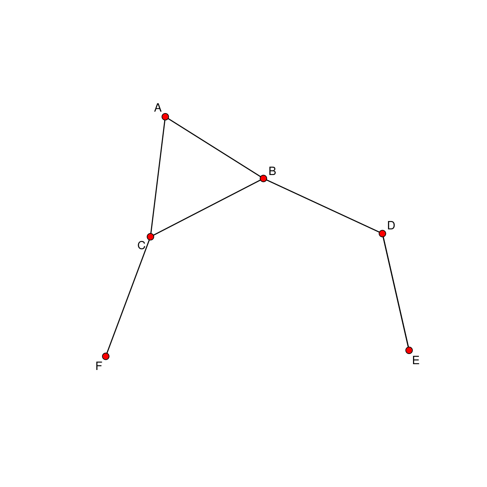
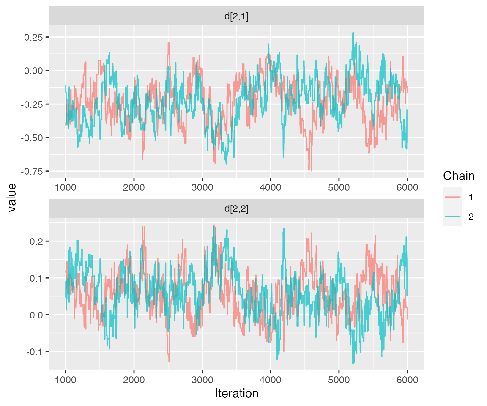
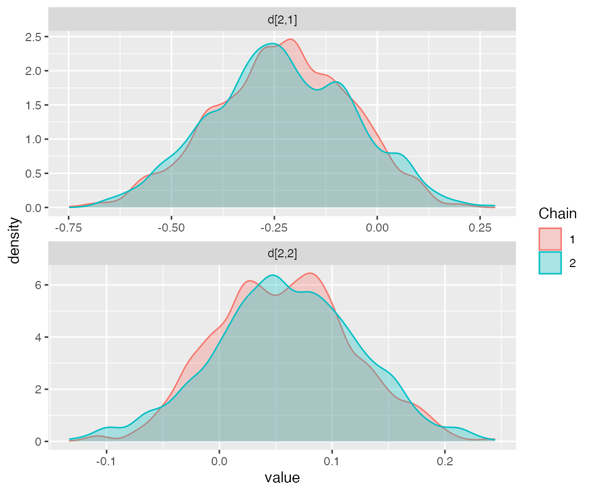
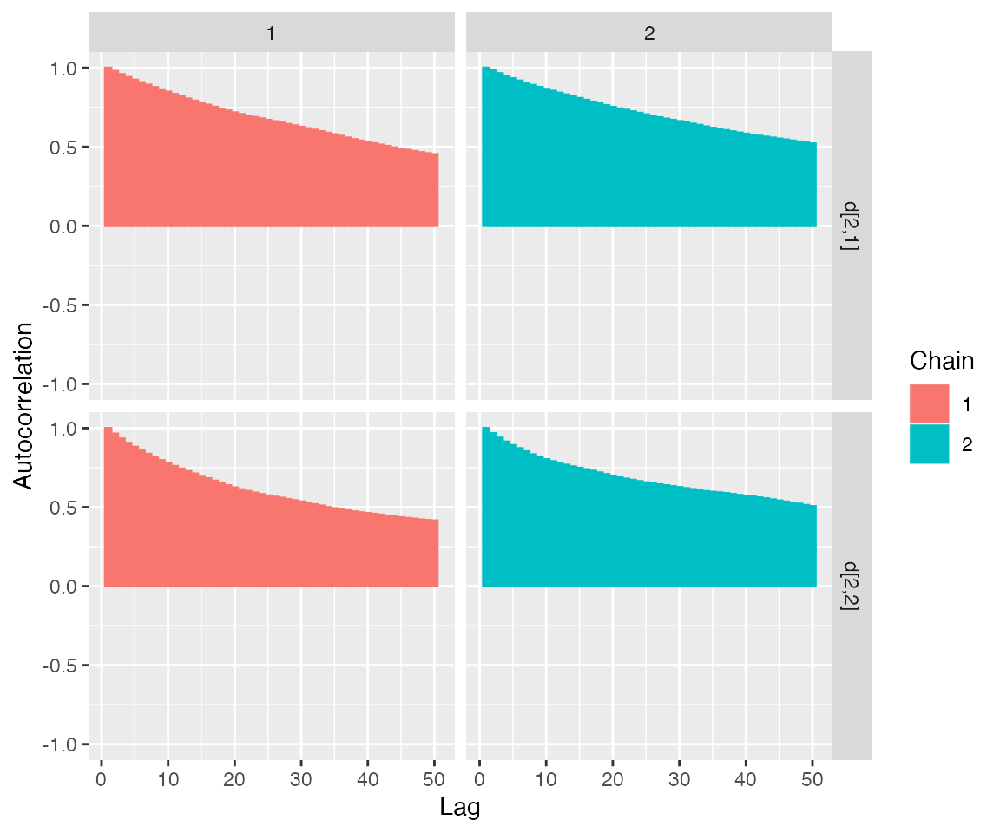
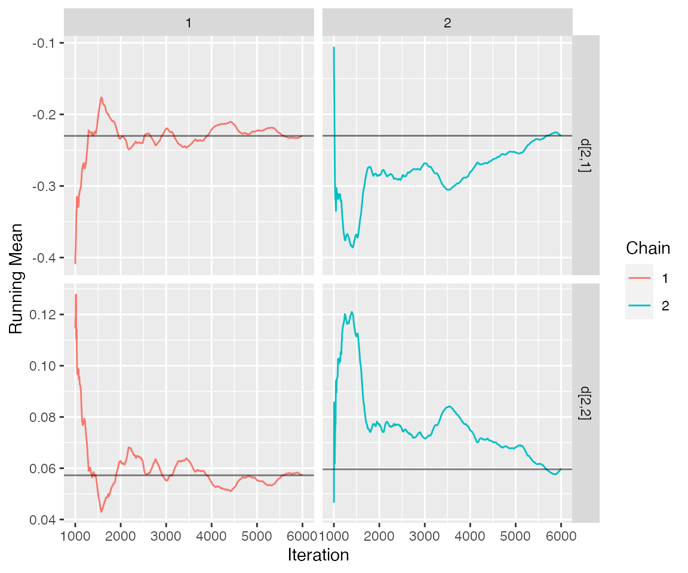
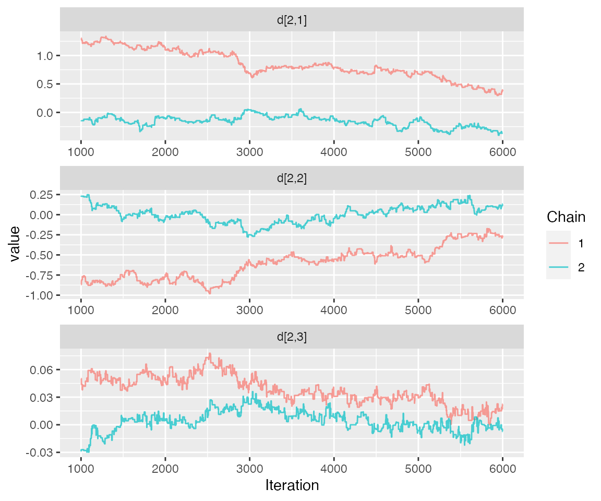
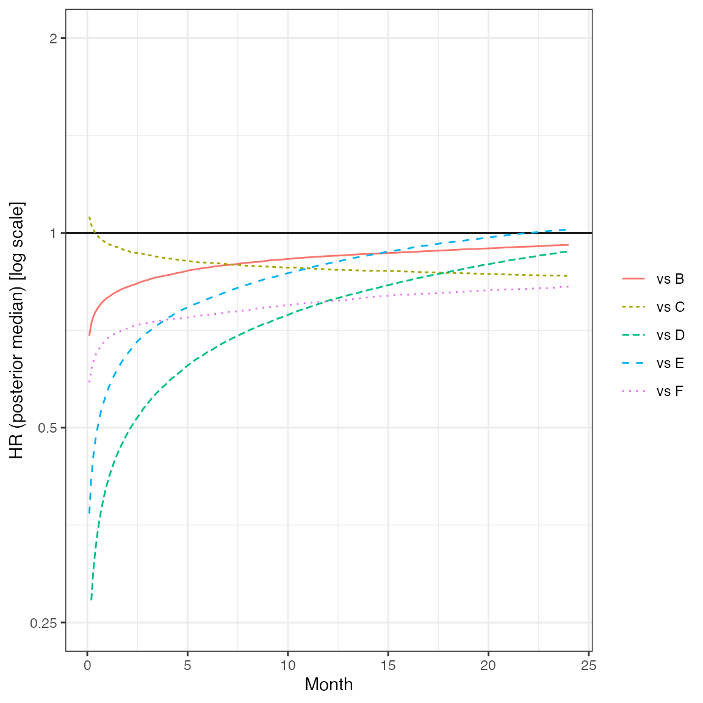
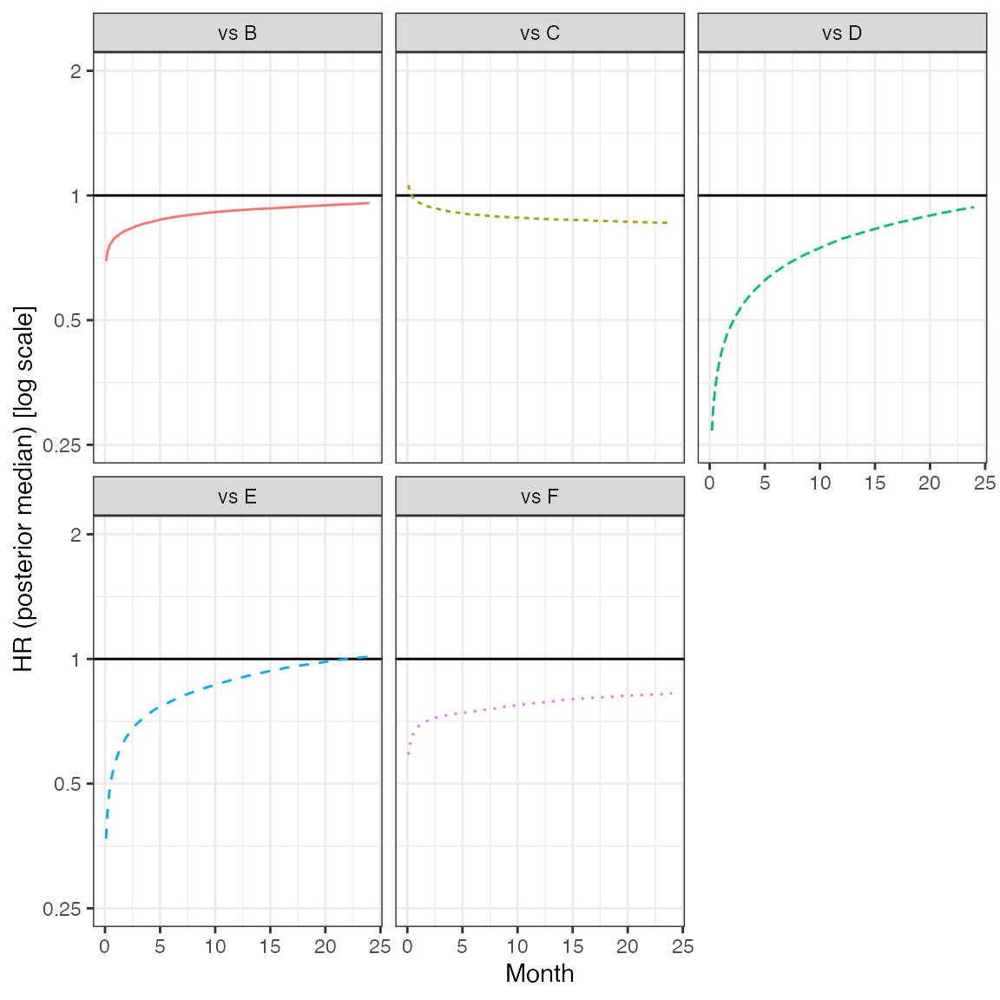
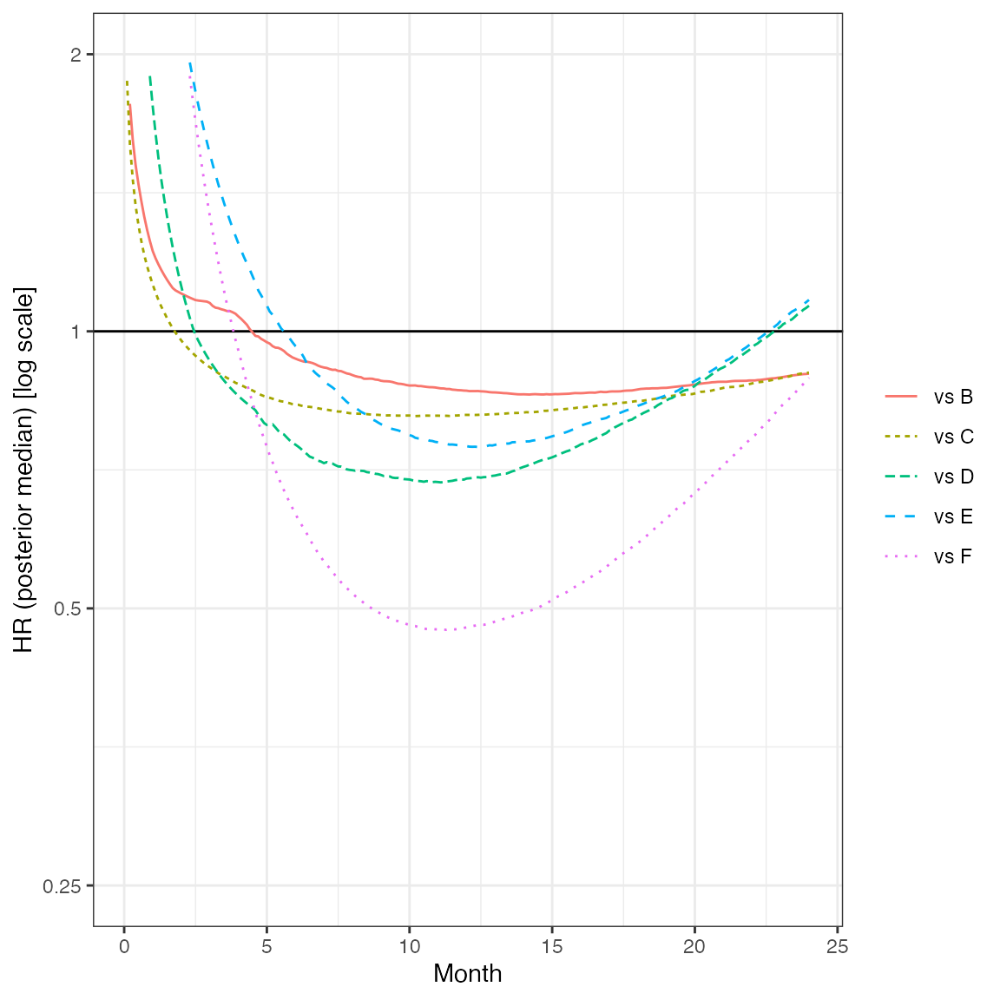
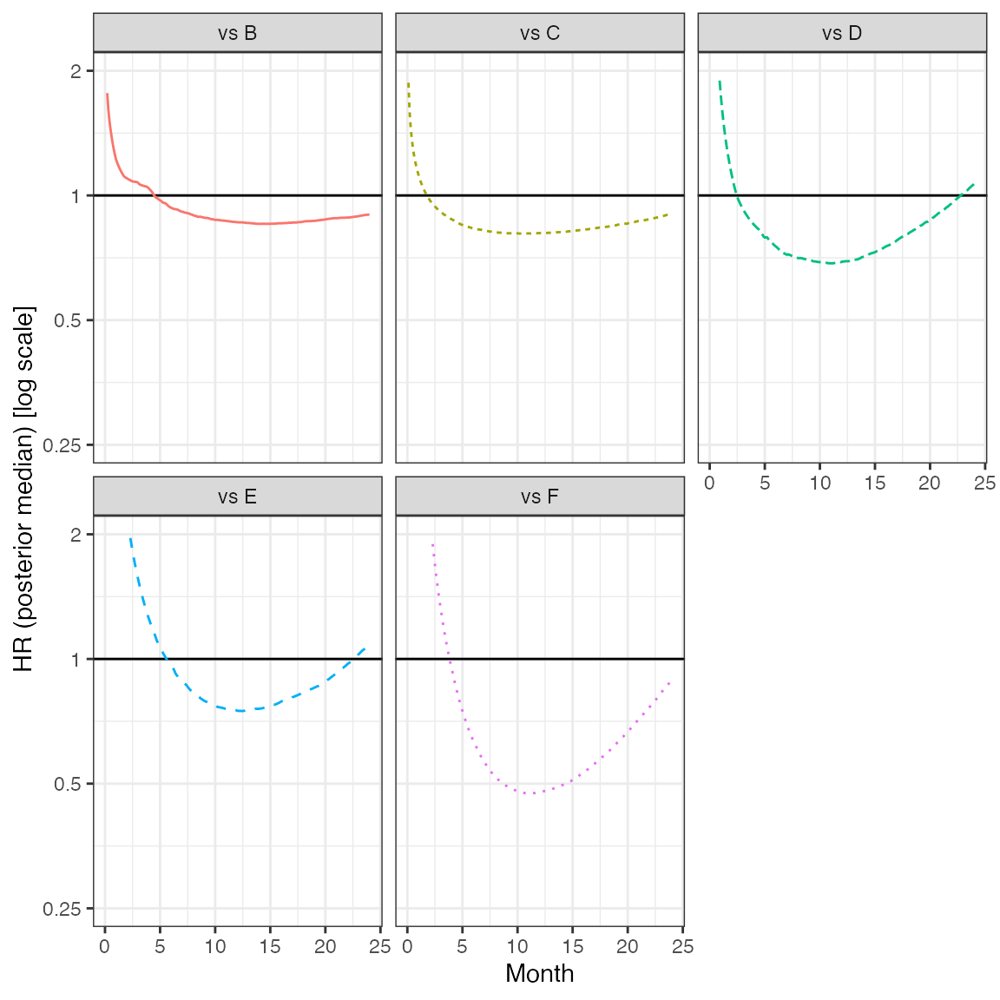

example-nma-groupedTTE-FP.Rmd“Minimal” example that might serve as template ## Introduction This vignette provides a short example of a Bayesian fixed effect fractional polynomial NMA model for grouped survival data.
data("grouped_TTE")
# Returns list list contaiing a jags list ready for input to `nma_fit` and a network object model_input <- nma_pre_proc(grouped_TTE, model_plan)
Figure Network graph
plot(model_input$network, displaylabels = TRUE)

model <- nma_fit(model_input = model_input)
## module glm loaded## Compiling model graph
## Resolving undeclared variables
## Allocating nodes
## Graph information:
## Observed stochastic nodes: 675
## Unobserved stochastic nodes: 12
## Total graph size: 9157
##
## Initializing model# Prepare plot data nodes <- colnames(as.mcmc(model)[[1]]) sel <- grep("d[2,", nodes, fixed = TRUE) plot_data <- ggs(as.mcmc(model)[, sel])
Produce diagnostic plots to further assess convergence. Here: select the contrasts trt 2 vs trt 1 for visibility.
Figure Traceplot
ggs_traceplot(plot_data)

Figure Densityplot
ggs_density(plot_data)

Figure Auto-correlation plot
ggs_autocorrelation(plot_data)

Figure Running means
ggs_running(plot_data)

Save the FE results for later use.
res_fe1 <- model rm(model)
Create a new model plan and re-run the fit.
# Returns list list contaiing a jags list ready for input to `nma_fit` and a network object model_input <- nma_pre_proc(grouped_TTE, model_plan)
model <- nma_fit(model_input = model_input)
## Compiling model graph
## Resolving undeclared variables
## Allocating nodes
## Graph information:
## Observed stochastic nodes: 675
## Unobserved stochastic nodes: 12
## Total graph size: 10448
##
## Initializing modelJAGS summary. Check convergence by inspecting Rhat (should be at least <1.05), and see whether the effective sample size is large enough to allow for inference (rule of thumb: n.eff >1000, though this may be demanding).
Produce diagnostic plots to further assess convergence. Here: select the contrasts trt 2 vs trt 1 for visibility.
# Prepare plot data nodes <- colnames(as.mcmc(model)[[1]]) sel <- grep("d[2,", nodes, fixed = TRUE) plot_data <- ggs(as.mcmc(model)[, sel])
Figure Traceplot
ggs_traceplot(plot_data)

The chains are obviously MUCH too short!
Save the results for later use.
res_fe2 <- model rm(model)
Start with an object collecting all fits.
all_res <- list(res_fe1, res_fe2)
dcompare <- get_fp_comparison(all_res) cat("__Table__ Model comparison")
Table Model comparison
pander::pandoc.table(dcompare, row.names = FALSE, split.tables = Inf)
| Model | Order | Exponents | REINT | RE | DIC | pD | meanDev |
|---|---|---|---|---|---|---|---|
| FP | 1 | 0 | FALSE | FALSE | 2706.7 | 24.1 | 2681.9 |
| FP | 2 | 0, 1 | FALSE | FALSE | 2658 | 37.9 | 2652.7 |
# loop through fits for(i in seq_along(all_res)){ res_i <- all_res[[i]] title <- res_i$descr cat("### ", title, " \n") ## Tables: Hazard ratio estimates for each segment HR_rev <- get_fp_HR(x = seq(0.1, 24, 0.1), fit = res_i, trt.nos = 1:res_i$data.jg$Ntrt, ref.no = 2, # use this treatment in the list of treatments as reference for the HRs revert = TRUE # revert to get HRs ref vs other treatments ) fig1 <- plot_fp_HR(HR_rev, xlab = "Month", breaks = c(0.25, 0.5, 1, 2)) fig2 <- plot_fp_HR(HR_rev, xlab = "Month", breaks = c(0.25, 0.5, 1, 2), facet = TRUE) # !! HERE: ADD CIs !! dHRtab <- HR_rev %>% mutate(Month = round(x, 1)) %>% # trick, otherwise equality testing fails to pick out all timepoints in filter step filter(Month %in% seq(3, 24, 3)) %>% mutate(Comparison = lab, Month, HR = round(median, 3), lCI = round(lCI, 3), uCI = round(uCI, 3)) %>% select(Comparison, Month, HR, lCI, uCI) cat("__Figure__ Hazard ratios treatment A vs other treatments\n") plot(fig1) cat("\n\n") cat("__Figure__ Hazard ratios treatment A vs other treatments (multi-panel)\n") plot(fig2) cat("\n\n") cat("__Table__ Hazard ratios treatment A vs other treatments\n") pander::pandoc.table(dHRtab, row.names = FALSE, split.tables = Inf) cat("\n\n") cat("\n\n") rm(HR_rev) rm(dHRtab) rm(fig1) rm(fig2) rm(res_i) }
Figure Hazard ratios treatment A vs other treatments 
Figure Hazard ratios treatment A vs other treatments (multi-panel) 
Table Hazard ratios treatment A vs other treatments
| Comparison | Month | HR | lCI | uCI |
|---|---|---|---|---|
| A vs B | 3 | 0.846 | 0.684 | 1.044 |
| A vs B | 6 | 0.884 | 0.755 | 1.034 |
| A vs B | 9 | 0.906 | 0.781 | 1.042 |
| A vs B | 12 | 0.921 | 0.793 | 1.056 |
| A vs B | 15 | 0.931 | 0.801 | 1.076 |
| A vs B | 18 | 0.94 | 0.807 | 1.096 |
| A vs B | 21 | 0.95 | 0.808 | 1.113 |
| A vs B | 24 | 0.959 | 0.81 | 1.137 |
| A vs C | 3 | 0.924 | 0.686 | 1.235 |
| A vs C | 6 | 0.9 | 0.715 | 1.144 |
| A vs C | 9 | 0.887 | 0.708 | 1.108 |
| A vs C | 12 | 0.878 | 0.696 | 1.105 |
| A vs C | 15 | 0.873 | 0.681 | 1.111 |
| A vs C | 18 | 0.867 | 0.667 | 1.119 |
| A vs C | 21 | 0.862 | 0.653 | 1.129 |
| A vs C | 24 | 0.858 | 0.64 | 1.143 |
| A vs D | 3 | 0.545 | 0.389 | 0.833 |
| A vs D | 6 | 0.655 | 0.506 | 0.887 |
| A vs D | 9 | 0.726 | 0.571 | 0.942 |
| A vs D | 12 | 0.786 | 0.609 | 1.011 |
| A vs D | 15 | 0.83 | 0.633 | 1.088 |
| A vs D | 18 | 0.87 | 0.649 | 1.161 |
| A vs D | 21 | 0.906 | 0.659 | 1.233 |
| A vs D | 24 | 0.937 | 0.662 | 1.302 |
| A vs E | 3 | 0.702 | 0.466 | 1.14 |
| A vs E | 6 | 0.791 | 0.59 | 1.11 |
| A vs E | 9 | 0.85 | 0.65 | 1.15 |
| A vs E | 12 | 0.897 | 0.676 | 1.204 |
| A vs E | 15 | 0.935 | 0.686 | 1.264 |
| A vs E | 18 | 0.967 | 0.684 | 1.317 |
| A vs E | 21 | 0.992 | 0.68 | 1.384 |
| A vs E | 24 | 1.014 | 0.682 | 1.445 |
| A vs F | 3 | 0.726 | 0.389 | 1.307 |
| A vs F | 6 | 0.747 | 0.491 | 1.176 |
| A vs F | 9 | 0.767 | 0.537 | 1.142 |
| A vs F | 12 | 0.783 | 0.547 | 1.137 |
| A vs F | 15 | 0.8 | 0.552 | 1.152 |
| A vs F | 18 | 0.809 | 0.554 | 1.18 |
| A vs F | 21 | 0.818 | 0.548 | 1.216 |
| A vs F | 24 | 0.826 | 0.536 | 1.259 |
Figure Hazard ratios treatment A vs other treatments 
Figure Hazard ratios treatment A vs other treatments (multi-panel) 
Table Hazard ratios treatment A vs other treatments
| Comparison | Month | HR | lCI | uCI |
|---|---|---|---|---|
| A vs B | 3 | 1.074 | 0.797 | 1.639 |
| A vs B | 6 | 0.934 | 0.779 | 1.133 |
| A vs B | 9 | 0.884 | 0.726 | 1.075 |
| A vs B | 12 | 0.862 | 0.687 | 1.072 |
| A vs B | 15 | 0.854 | 0.673 | 1.073 |
| A vs B | 18 | 0.865 | 0.692 | 1.085 |
| A vs B | 21 | 0.881 | 0.709 | 1.095 |
| A vs B | 24 | 0.899 | 0.737 | 1.116 |
| A vs C | 3 | 0.914 | 0.745 | 1.533 |
| A vs C | 6 | 0.832 | 0.697 | 1.094 |
| A vs C | 9 | 0.811 | 0.654 | 0.996 |
| A vs C | 12 | 0.811 | 0.645 | 0.978 |
| A vs C | 15 | 0.821 | 0.65 | 1.007 |
| A vs C | 18 | 0.84 | 0.662 | 1.06 |
| A vs C | 21 | 0.868 | 0.671 | 1.116 |
| A vs C | 24 | 0.902 | 0.673 | 1.195 |
| A vs D | 3 | 0.929 | 0.474 | 3.888 |
| A vs D | 6 | 0.753 | 0.433 | 2.275 |
| A vs D | 9 | 0.698 | 0.45 | 1.625 |
| A vs D | 12 | 0.692 | 0.502 | 1.245 |
| A vs D | 15 | 0.73 | 0.565 | 1.079 |
| A vs D | 18 | 0.808 | 0.554 | 1.197 |
| A vs D | 21 | 0.914 | 0.521 | 1.459 |
| A vs D | 24 | 1.066 | 0.491 | 1.846 |
| A vs E | 3 | 1.561 | 0.878 | 12.29 |
| A vs E | 6 | 0.964 | 0.545 | 3.973 |
| A vs E | 9 | 0.793 | 0.483 | 2.077 |
| A vs E | 12 | 0.75 | 0.513 | 1.363 |
| A vs E | 15 | 0.769 | 0.552 | 1.082 |
| A vs E | 18 | 0.83 | 0.532 | 1.191 |
| A vs E | 21 | 0.924 | 0.507 | 1.474 |
| A vs E | 24 | 1.082 | 0.472 | 1.888 |
| A vs F | 3 | 1.335 | 0.843 | 2.129 |
| A vs F | 6 | 0.634 | 0.436 | 0.935 |
| A vs F | 9 | 0.494 | 0.344 | 0.737 |
| A vs F | 12 | 0.477 | 0.333 | 0.7 |
| A vs F | 15 | 0.51 | 0.357 | 0.724 |
| A vs F | 18 | 0.589 | 0.405 | 0.84 |
| A vs F | 21 | 0.715 | 0.481 | 1.052 |
| A vs F | 24 | 0.89 | 0.577 | 1.386 |
The NMA baseline estimate from the ref_trt arm from ref_std is used. These are combined with the time-varying hazard-ratio functions from the NMA to obtain the survivor functions for the other interventions.
ref_trt <- "B" ref_std <- "STUDY2" hor <- 60 # loop through fits for(i in seq_along(all_res)){ res_i <- all_res[[i]] title <- res_i$descr cat("### ", title, " \n") ## Plots of survivor functions over time ("NMA result"), ref study/arm and timehorizons specified in settings function sel_ref <- which(attr(res_i$data.jg, "d_arms")$study == ref_std & attr(res_i$data.jg, "d_arms")$treatment == ref_trt) id_ref_std <- attr(res_i$data.jg, "d_arms")$studyn[sel_ref] id_ref_arm <- attr(res_i$data.jg, "d_arms")$arm[sel_ref] S_extrap <- get_fp_S(fit = res_i, ref.std = id_ref_std, ref.arm = id_ref_arm, time = seq(0.1, hor, 0.1)) fig <- ggplot(data = S_extrap) + geom_line(aes(x = time, y = S, col = treatment, linetype = treatment)) + ylim(0, 1) + xlab("Month") + ylab("Survival probability") + theme_bw() + theme(legend.title = element_blank()) cat("__Figure__ Survivor function estimates (time horizon:", hor, "months) \n") plot(fig) cat("\n\n") fig <- ggplot(data = S_extrap) + facet_wrap(~treatment) + geom_ribbon(aes(x = time, ymin = lCrI, ymax = uCrI), fill = "lightblue", alpha = 0.8) + geom_line(aes(x = time, y = S)) + ylim(0, 1) + xlab("Month") + ylab("Survival probability") + theme_bw() cat("__Figure__ Survivor function estimates by treatment (time horizon:", hor, "months) \n") plot(fig) cat("\n\n") rm(list = c("S_extrap", "fig")) rm(res_i) }
For every arm in every study, the study baseline hazard estimate is combined with the corresponding contrast estimate (both from the NMA) to obtain the estimated survivor functions.
hor <- 36 # loop through fits for(i in seq_along(all_res)){ res_i <- all_res[[i]] title <- res_i$descr cat("### ", title, " \n") gof <- get_fp_GoF(fit = res_i, time = seq(0.1, hor, 0.1)) fig <- ggplot() + geom_line(data = gof %>% filter(type == "nma"), aes(x = time, y = S, col = treatment)) + geom_line(data = gof %>% filter(type == "obs"), aes(x = time, y = S, col = treatment), linetype = "dashed") + facet_wrap(~study, ncol = 2) + ylim(0, 1) + xlim(0, 36) + xlab("Month") + ylab("Survival probability") + theme_bw() + theme(legend.position = "top", legend.title = element_blank()) cat("__Figure__ Goodness-of-fit: estimated (solid lines) and observed (dashed) survivor functions for each study\n") plot(fig) cat("\n\n") rm(list = c("gof", "fig")) rm(res_i) }
# loop through fits for(i in seq_along(all_res)){ res_i <- all_res[[i]] title <- res_i$descr cat("### ", title, " \n") cest <- get_fp_contrasts(res_i) cat("\n\n") cat("__Table__ Contrast estimates in fractional polynomial vs network reference\n") pander::pandoc.table(cest, row.names = FALSE, split.tables = Inf) cat("\n\n") rm(cest) rm(res_i) }
Table Contrast estimates in fractional polynomial vs network reference
| Treatment | Int.med | Int.lCI | Int.uCI | Slope1.med | Slope1.lCI | Slope1.uCI |
|---|---|---|---|---|---|---|
| A | -0.231 | -0.56 | 0.088 | 0.058 | -0.062 | 0.181 |
| C | -0.201 | -0.674 | 0.238 | 0.101 | -0.091 | 0.289 |
| D | 0.676 | 0.066 | 1.069 | -0.208 | -0.379 | 0.071 |
| E | 0.346 | -0.442 | 0.884 | -0.127 | -0.346 | 0.211 |
| F | 0.16 | -0.761 | 1.113 | -0.009 | -0.373 | 0.343 |
Table Contrast estimates in fractional polynomial vs network reference
| Treatment | Int.med | Int.lCI | Int.uCI | Slope1.med | Slope1.lCI | Slope1.uCI | Slope2.med | Slope2.lCI | Slope2.uCI |
|---|---|---|---|---|---|---|---|---|---|
| A | 0.181 | -0.328 | 1.235 | -0.232 | -0.881 | 0.172 | 0.018 | -0.014 | 0.063 |
| C | 0.097 | -0.401 | 0.685 | -0.012 | -0.335 | 0.403 | -0.005 | -0.034 | 0.027 |
| D | -0.327 | -1.072 | 0.477 | 0.553 | -0.12 | 0.739 | -0.066 | -0.114 | 0.064 |
| E | -1.276 | -3.053 | -0.896 | 1.055 | 0.912 | 1.253 | -0.093 | -0.141 | 0.019 |
| F | -1.338 | -2.293 | -0.521 | 1.41 | 0.67 | 2 | -0.138 | -0.182 | -0.058 |
# loop through fits for(i in seq_along(all_res)){ res_i <- all_res[[i]] title <- res_i$descr cat("### ", title, " \n") corrs <- get_fp_corrs(res_i) for(j in 1:res_i$data.jg$Ntrt){ cat("\n\n") cat("__Table__ Posterior correlations of (multivariate) contrasts for", dimnames(corrs)$treatment[j],"vs reference\n") pander::pandoc.table(corrs[j,,], row.names = dimnames(corrs[j,,])[[1]], split.tables = Inf) cat("\n\n") } rm(corrs) rm(res_i) }
Table Posterior correlations of (multivariate) contrasts for B vs reference
| Int | Slope1 | |
|---|---|---|
| Int | 1 | NA |
| Slope1 | NA | 1 |
Table Posterior correlations of (multivariate) contrasts for A vs reference
| Int | Slope1 | |
|---|---|---|
| Int | 1 | -0.901 |
| Slope1 | -0.901 | 1 |
Table Posterior correlations of (multivariate) contrasts for C vs reference
| Int | Slope1 | |
|---|---|---|
| Int | 1 | -0.877 |
| Slope1 | -0.877 | 1 |
Table Posterior correlations of (multivariate) contrasts for D vs reference
| Int | Slope1 | |
|---|---|---|
| Int | 1 | -0.919 |
| Slope1 | -0.919 | 1 |
Table Posterior correlations of (multivariate) contrasts for E vs reference
| Int | Slope1 | |
|---|---|---|
| Int | 1 | -0.925 |
| Slope1 | -0.925 | 1 |
Table Posterior correlations of (multivariate) contrasts for F vs reference
| Int | Slope1 | |
|---|---|---|
| Int | 1 | -0.927 |
| Slope1 | -0.927 | 1 |
Table Posterior correlations of (multivariate) contrasts for B vs reference
| Int | Slope1 | Slope2 | |
|---|---|---|---|
| Int | 1 | NA | NA |
| Slope1 | NA | 1 | NA |
| Slope2 | NA | NA | 1 |
Table Posterior correlations of (multivariate) contrasts for A vs reference
| Int | Slope1 | Slope2 | |
|---|---|---|---|
| Int | 1 | -0.973 | 0.886 |
| Slope1 | -0.973 | 1 | -0.963 |
| Slope2 | 0.886 | -0.963 | 1 |
Table Posterior correlations of (multivariate) contrasts for C vs reference
| Int | Slope1 | Slope2 | |
|---|---|---|---|
| Int | 1 | -0.905 | 0.544 |
| Slope1 | -0.905 | 1 | -0.807 |
| Slope2 | 0.544 | -0.807 | 1 |
Table Posterior correlations of (multivariate) contrasts for D vs reference
| Int | Slope1 | Slope2 | |
|---|---|---|---|
| Int | 1 | 0.105 | -0.733 |
| Slope1 | 0.105 | 1 | -0.738 |
| Slope2 | -0.733 | -0.738 | 1 |
Table Posterior correlations of (multivariate) contrasts for E vs reference
| Int | Slope1 | Slope2 | |
|---|---|---|---|
| Int | 1 | 0.504 | -0.952 |
| Slope1 | 0.504 | 1 | -0.696 |
| Slope2 | -0.952 | -0.696 | 1 |
Table Posterior correlations of (multivariate) contrasts for F vs reference
| Int | Slope1 | Slope2 | |
|---|---|---|---|
| Int | 1 | -0.887 | 0.579 |
| Slope1 | -0.887 | 1 | -0.864 |
| Slope2 | 0.579 | -0.864 | 1 |
# loop through fits for(i in seq_along(all_res)){ res_i <- all_res[[i]] title <- res_i$descr cat("## ", title, " \n\n") jginfo <- get_jags_info(res_i, include.comments = TRUE) cat("```\n", jginfo, "\n```\n\n") rm(jginfo) rm(out) }
##############################################
# DATA #
##############################################
list(
Na = c(2, 2, 2, 2, 2, 2, 2) ,
Nobs = 675 ,
Ns = 7 ,
Ntrt = 6 ,
P1 = 0 ,
a = c(2, 2, 2, 2, 2, 2, 2, 2, 2, 2, 2, 2, 2, 2, 2, 2, 2, 2, 2, 2, 2, 2, 2, 2, 2, 2, 2, 2, 2, 2, 2, 2, 2, 2, 2, 2, 2, 2, 2, 2, 2, 2, 2, 2, 2, 2, 2, 2, 2, 2, 2, 2, 2, 1, 1, 1, 1, 1, 1, 1, 1, 1, 1, 1, 1, 1, 1, 1, 1, 1, 1, 1, 1, 1, 1, 1, 1, 1, 1, 1, 1, 1, 1, 1, 1, 1, 1, 1, 1, 1, 1, 1, 1, 1, 1, 1, 1, 1, 1, 1, 1, 1, 1, 1, 1, 1, 1, 1, 1, 1, 1, 1, 1, 1, 1, 1, 1, 1, 1, 1, 1, 1, 1, 1, 1, 1, 1, 1, 1, 1, 1, 1, 1, 1, 1, 1, 1, 1, 1, 1, 1, 1, 1, 1, 1, 1, 1, 1, 2, 2, 2, 2, 2, 2, 2, 2, 2, 2, 2, 2, 2, 2, 2, 2, 2, 2, 2,
2, 2, 2, 2, 2, 2, 2, 2, 2, 2, 2, 2, 2, 2, 2, 2, 2, 2, 2, 2, 2, 2, 2, 1, 1, 1, 1, 1, 1, 1, 1, 1, 1, 1, 1, 1, 1, 1, 1, 1, 1, 1, 1, 1, 1, 1, 1, 1, 1, 1, 1, 1, 1, 1, 1, 1, 1, 1, 1, 2, 2, 2, 2, 2, 2, 2, 2, 2, 2, 2, 2, 2, 2, 2, 2, 2, 2, 2, 2, 2, 2, 2, 2, 2, 2, 2, 2, 2, 2, 2, 2, 2, 2, 2, 2, 2, 2, 2, 2, 2, 2, 2, 2, 2, 2, 2, 2, 2, 2, 2, 2, 2, 2, 2, 2, 2, 2, 2, 2, 2, 2, 2, 2, 2, 2, 2, 2, 2, 2, 2, 2, 2, 2, 2, 2, 1, 1, 1, 1, 1, 1, 1, 1, 1, 1, 1, 1, 1, 1, 1, 1, 1, 1, 1, 1, 1, 1, 1, 1, 1, 1, 1, 1, 1, 1, 1, 1,
1, 1, 1, 1, 1, 1, 1, 1, 1, 1, 1, 1, 1, 1, 1, 1, 1, 1, 1, 1, 1, 1, 1, 1, 1, 1, 1, 1, 1, 1, 1, 1, 1, 1, 1, 1, 1, 1, 1, 1, 1, 1, 1, 1, 1, 1, 1, 1, 1, 1, 1, 1, 1, 1, 1, 1, 1, 1, 1, 1, 1, 1, 1, 1, 1, 2, 2, 2, 2, 2, 2, 2, 2, 2, 2, 2, 2, 2, 2, 2, 2, 2, 2, 2, 2, 2, 2, 2, 2, 2, 2, 2, 2, 2, 2, 2, 2, 2, 2, 2, 2, 2, 2, 2, 2, 2, 2, 2, 2, 2, 2, 2, 2, 2, 2, 2, 2, 2, 2, 2, 2, 2, 2, 2, 2, 2, 2, 2, 2, 2, 2, 2, 2, 2, 2, 2, 2, 2, 2, 2, 2, 2, 2, 2, 2, 2, 2, 2, 2, 2, 2, 2, 2, 2, 2, 2, 2, 2, 2, 2, 2, 2, 2, 2, 2, 2, 2,
2, 2, 2, 2, 1, 1, 1, 1, 1, 1, 1, 1, 1, 1, 1, 1, 1, 1, 1, 1, 1, 1, 1, 1, 1, 1, 1, 1, 1, 1, 1, 1, 1, 1, 1, 1, 1, 1, 1, 1, 1, 1, 1, 1, 1, 1, 1, 1, 1, 1, 1, 1, 1, 1, 1, 1, 1, 1, 1, 1, 1, 1, 1, 1, 1, 1, 1, 1, 1, 1, 1, 1, 1, 1, 1, 1, 1, 1, 1, 1, 1, 1, 1, 1, 1, 1, 1, 1, 1, 1, 1, 1, 1, 1, 1, 1, 1, 1, 1, 1, 1, 1, 1, 1, 1, 1, 1, 1, 1, 1, 1, 2, 2, 2, 2, 2, 2, 2, 2, 2, 2, 2, 2, 2, 2, 2, 2, 2, 2, 2, 2, 2, 2, 2, 2, 2, 2, 2, 2, 2, 2, 2, 2, 2, 2, 2, 2, 2, 2, 2, 2, 2, 2, 2, 2, 2, 2, 2, 2, 2, 2, 2, 2, 2, 2, 2, 2,
2, 2, 2, 2, 2, 2, 2) ,
dt = c(1, 1, 1, 1, 1, 1, 1, 1, 1, 1, 1, 1, 1, 1, 1, 1, 1, 1, 1, 1, 1, 1, 1, 1, 1, 1, 1, 1, 1, 1, 1, 1, 1, 1, 1, 1, 1, 1, 1, 1, 1, 1, 1, 1, 1, 1, 1, 1, 1, 1, 1, 1, 1, 1, 1, 1, 1, 1, 1, 1, 1, 1, 1, 1, 1, 1, 1, 1, 1, 1, 1, 1, 1, 1, 1, 1, 1, 1, 1, 1, 1, 1, 1, 1, 1, 1, 1, 1, 1, 1, 1, 1, 1, 1, 1, 1, 1, 1, 1, 1, 1, 1, 1, 1, 1, 1, 1, 1, 1, 1, 1, 1, 1, 1, 1, 1, 1, 1, 1, 1, 1, 1, 1, 1, 1, 1, 1, 1, 1, 1, 1, 1, 1, 1, 1, 1, 1, 1, 1, 1, 1, 1, 1, 1, 1, 1, 1, 1, 1, 1, 1, 1, 1, 1, 1, 1, 1, 1, 1, 1, 1, 1, 1, 1, 1, 1, 1,
1, 1, 1, 1, 1, 1, 1, 1, 1, 1, 1, 1, 1, 1, 1, 1, 1, 1, 1, 1, 1, 1, 1, 1, 1, 1, 1, 1, 1, 1, 1, 1, 1, 1, 1, 1, 1, 1, 1, 1, 1, 1, 1, 1, 1, 1, 1, 1, 1, 1, 1, 1, 1, 1, 1, 1, 1, 1, 1, 1, 1, 1, 1, 1, 1, 1, 1, 1, 1, 1, 1, 1, 1, 1, 1, 1, 1, 1, 1, 1, 1, 1, 1, 1, 1, 1, 1, 1, 1, 1, 1, 1, 1, 1, 1, 1, 1, 1, 1, 1, 1, 1, 1, 1, 1, 1, 1, 1, 1, 1, 1, 1, 1, 1, 1, 1, 1, 1, 1, 1, 1, 1, 1, 1, 1, 1, 1, 1, 1, 1, 1, 1, 1, 1, 1, 1, 1, 1, 1, 1, 1, 1, 1, 1, 1, 1, 1, 1, 1, 1, 1, 1, 1, 1, 1, 1, 1, 1, 1, 1, 1, 1, 1, 1, 1, 1, 1,
1, 1, 1, 1, 1, 1, 1, 1, 1, 1, 1, 1, 1, 1, 1, 1, 1, 1, 1, 1, 1, 1, 1, 1, 1, 1, 1, 1, 1, 1, 1, 1, 1, 1, 1, 1, 1, 1, 1, 1, 1, 1, 1, 1, 1, 1, 1, 1, 1, 1, 1, 1, 1, 1, 1, 1, 1, 1, 1, 1, 1, 1, 1, 1, 1, 1, 1, 1, 1, 1, 1, 1, 1, 1, 1, 1, 1, 1, 1, 1, 1, 1, 1, 1, 1, 1, 1, 1, 1, 1, 1, 1, 1, 1, 1, 1, 1, 1, 1, 1, 1, 1, 1, 1, 1, 1, 1, 1, 1, 1, 1, 1, 1, 1, 1, 1, 1, 1, 1, 1, 1, 1, 1, 1, 1, 1, 1, 1, 1, 1, 1, 1, 1, 1, 1, 1, 1, 1, 1, 1, 1, 1, 1, 1, 1, 1, 1, 1, 1, 1, 1, 1, 1, 1, 1, 1, 1, 1, 1, 1, 1, 1, 1, 1, 1, 1, 1,
1, 1, 1, 1, 1, 1, 1, 1, 1, 1, 1, 1, 1, 1, 1, 1, 1, 1, 1, 1, 1, 1, 1, 1, 1, 1, 1, 1, 1, 1, 1, 1, 1, 1, 1, 1, 1, 1, 1, 1, 1, 1, 1, 1, 1, 1, 1, 1, 1, 1, 1, 1, 1, 1, 1, 1, 1, 1, 1, 1, 1, 1, 1, 1, 1, 1, 1, 1, 1, 1, 1, 1, 1, 1, 1, 1, 1, 1, 1, 1, 1, 1, 1, 1, 1, 1, 1, 1, 1, 1, 1, 1, 1, 1, 1, 1, 1, 1, 1, 1, 1, 1, 1, 1, 1, 1, 1, 1, 1, 1, 1, 1, 1, 1, 1, 1, 1, 1, 1, 1, 1, 1, 1, 1, 1, 1, 1, 1, 1, 1, 1, 1, 1, 1, 1, 1, 1, 1, 1, 1, 1, 1, 1, 1, 1, 1, 1, 1, 1, 1, 1, 1, 1, 1, 1, 1, 1, 1, 1, 1, 1, 1, 1, 1, 1, 1, 1,
1, 1, 1, 1, 1, 1, 1) ,
feprior_mean = c(0, 0) ,
feprior_prec = structure(.Data = c(1e-04, 0, 0, 1e-04) ,.Dim = c(2, 2) ) ,
n = c(182, 177, 172, 164, 155, 148, 143, 138, 132, 128, 125, 120, 117, 110, 108, 106, 101, 98, 96, 90, 87, 83, 79, 75, 70, 66, 59, 56, 53, 50, 47, 45, 39, 37, 34, 32, 31, 26, 25, 24, 23, 21, 19, 16, 14, 13, 11, 10, 8, 6, 5, 3, 1, 183, 179, 172, 159, 152, 147, 139, 133, 131, 124, 119, 115, 110, 104, 101, 95, 93, 92, 88, 83, 80, 76, 73, 68, 62, 59, 53, 50, 43, 40, 37, 35, 33, 31, 30, 29, 26, 24, 22, 19, 18, 18, 18, 18, 17, 17, 15, 14, 12, 10, 8, 4, 2, 322, 319, 309, 301, 288, 277, 262, 255, 248, 238, 229,
226, 216, 206, 200, 195, 189, 183, 176, 171, 163, 160, 150, 148, 142, 136, 130, 127, 121, 116, 113, 112, 108, 105, 101, 101, 96, 95, 91, 89, 86, 84, 327, 324, 318, 307, 297, 283, 275, 263, 256, 248, 241, 235, 225, 217, 212, 201, 194, 184, 178, 169, 161, 156, 149, 142, 134, 131, 125, 117, 115, 107, 101, 96, 93, 89, 83, 79, 76, 74, 70, 68, 65, 63, 375, 374, 368, 360, 352, 339, 326, 319, 315, 308, 295, 289, 283, 271, 262, 259, 247, 238, 229, 225, 213, 203, 197, 190, 180, 161, 135, 121, 98, 78, 61, 55,
52, 45, 39, 35, 375, 372, 356, 338, 319, 308, 295, 282, 276, 269, 260, 251, 242, 228, 221, 210, 203, 200, 187, 180, 172, 168, 161, 155, 149, 132, 115, 104, 82, 66, 53, 48, 43, 39, 34, 30, 181, 181, 180, 176, 172, 169, 167, 158, 153, 145, 143, 141, 137, 133, 129, 126, 123, 121, 118, 113, 112, 108, 105, 101, 99, 99, 98, 95, 92, 90, 88, 87, 86, 83, 82, 82, 78, 78, 78, 78, 181, 179, 176, 175, 173, 172, 169, 166, 165, 164, 159, 155, 150, 144, 140, 135, 132, 132, 132, 129, 127, 126, 123, 121, 116, 109,
107, 105, 105, 104, 101, 97, 94, 93, 93, 90, 557, 552, 541, 532, 521, 505, 487, 473, 462, 452, 436, 423, 409, 388, 377, 368, 357, 348, 338, 328, 320, 312, 305, 295, 280, 273, 262, 255, 243, 235, 230, 226, 219, 215, 208, 204, 197, 184, 171, 156, 147, 147, 114, 114, 99, 99, 80, 77, 57, 48, 38, 27, 21, 20, 17, 14, 8, 6, 6, 1, 1, 553, 544, 530, 518, 501, 480, 468, 448, 435, 420, 406, 387, 377, 366, 354, 348, 339, 329, 321, 315, 304, 295, 283, 280, 272, 263, 254, 247, 237, 230, 224, 218, 212, 203, 192,
187, 180, 174, 162, 149, 138, 131, 120, 111, 100, 92, 80, 63, 56, 48, 38, 31, 20, 17, 14, 11, 9, 7, 5, 5, 1, 189, 184, 178, 166, 156, 144, 138, 131, 123, 117, 111, 106, 103, 98, 93, 88, 85, 79, 74, 68, 64, 59, 55, 50, 46, 43, 40, 37, 35, 31, 28, 26, 25, 20, 19, 15, 15, 12, 10, 9, 9, 3, 3, 3, 3, 188, 179, 175, 167, 159, 151, 141, 136, 131, 127, 123, 117, 112, 106, 101, 96, 94, 88, 84, 77, 70, 64, 57, 52, 44, 39, 39, 30, 30, 26, 23, 21, 20, 16, 16, 12, 11, 11, 10, 8, 7, 4, 4, 2, 2, 2, 363, 360, 344,
332, 314, 305, 286, 269, 261, 248, 236, 226, 220, 214, 199, 197, 188, 180, 177, 168, 162, 155, 151, 150, 148, 144, 140, 136, 128, 122, 118, 116, 113, 113, 109, 105, 98, 94, 87, 83, 75, 69, 64, 57, 53, 49, 46, 40, 37, 31, 25, 22, 18, 14, 10, 9, 7, 6, 3, 2, 1, 369, 366, 358, 347, 333, 322, 314, 302, 294, 277, 267, 254, 240, 236, 225, 218, 210, 197, 190, 179, 179, 173, 166, 163, 160, 154, 152, 148, 145, 143, 139, 136, 127, 123, 119, 118, 116, 112, 109, 106, 102, 99, 94, 85, 74, 66, 58, 50, 42, 35, 31,
28, 25, 20, 17, 15, 13, 11, 6, 3, 2, 1, 1) ,
r = c(2, 2, 4, 6, 4, 5, 4, 4, 4, 2, 5, 1, 7, 1, 1, 3, 1, 0, 3, 2, 1, 3, 2, 2, 2, 3, 1, 0, 0, 0, 1, 4, 1, 1, 1, 0, 4, 0, 0, 0, 0, 1, 0, 0, 0, 0, 0, 1, 0, 0, 0, 0, 0, 1, 4, 10, 4, 2, 6, 4, 0, 5, 3, 3, 3, 5, 1, 5, 1, 0, 3, 3, 3, 0, 0, 2, 2, 0, 3, 1, 3, 0, 1, 2, 0, 0, 0, 0, 2, 0, 0, 1, 0, 0, 0, 0, 1, 0, 0, 0, 0, 0, 0, 2, 0, 0, 3, 10, 7, 13, 10, 15, 7, 7, 9, 9, 3, 9, 10, 5, 5, 6, 5, 7, 5, 7, 3, 10, 1, 6, 6, 5, 3, 5, 5, 3, 0, 4, 3, 3, 0, 4, 1, 4, 1, 3, 2, 3, 2, 4, 9, 8, 12, 7, 11, 5, 7, 5, 4, 8, 7, 2, 10,
6, 8, 4, 8, 6, 3, 5, 5, 6, 2, 5, 5, 1, 6, 5, 3, 1, 2, 5, 2, 1, 1, 2, 1, 1, 0, 0, 0, 5, 6, 7, 11, 12, 7, 3, 6, 12, 5, 6, 11, 8, 1, 11, 8, 8, 3, 10, 9, 4, 5, 9, 2, 6, 3, 2, 1, 2, 1, 0, 3, 0, 0, 0, 0, 13, 14, 15, 7, 10, 12, 5, 6, 7, 8, 8, 14, 7, 10, 7, 3, 13, 5, 5, 2, 4, 4, 3, 3, 1, 2, 5, 1, 1, 0, 2, 0, 0, 0, 0, 0, 1, 4, 4, 3, 2, 9, 5, 8, 2, 2, 4, 4, 4, 3, 3, 2, 3, 5, 1, 4, 3, 4, 2, 0, 1, 3, 3, 2, 2, 1, 1, 3, 1, 0, 4, 0, 0, 0, 0, 2, 3, 1, 2, 1, 3, 3, 1, 1, 5, 4, 5, 6, 4, 5, 3, 0, 0, 3, 2, 1, 3, 2, 5,
7, 2, 2, 0, 1, 3, 4, 3, 1, 0, 3, 2, 3, 8, 6, 9, 14, 15, 10, 9, 8, 13, 11, 12, 21, 9, 8, 11, 9, 10, 9, 8, 6, 4, 6, 12, 4, 8, 4, 10, 6, 3, 1, 4, 2, 3, 2, 5, 5, 4, 6, 1, 0, 0, 0, 15, 0, 0, 3, 4, 1, 0, 0, 1, 0, 2, 0, 4, 0, 0, 0, 0, 0, 4, 8, 6, 12, 19, 9, 17, 11, 15, 12, 18, 10, 11, 11, 5, 9, 9, 6, 4, 10, 7, 9, 0, 5, 6, 6, 5, 7, 5, 5, 4, 3, 8, 9, 2, 6, 0, 5, 7, 3, 0, 3, 3, 6, 0, 3, 5, 1, 0, 0, 0, 2, 1, 2, 0, 0, 0, 0, 0, 0, 0, 2, 2, 10, 7, 8, 3, 6, 4, 5, 4, 4, 0, 3, 3, 1, 1, 4, 3, 2, 2, 2, 2, 1, 1, 2,
2, 0, 1, 3, 2, 0, 1, 0, 1, 0, 0, 1, 1, 1, 0, 0, 0, 0, 0, 0, 6, 2, 5, 5, 3, 8, 2, 4, 1, 2, 4, 3, 4, 4, 0, 2, 0, 3, 4, 1, 1, 0, 2, 3, 3, 0, 0, 0, 2, 0, 1, 1, 0, 0, 2, 1, 0, 0, 1, 1, 0, 0, 1, 0, 0, 0, 3, 15, 11, 18, 8, 19, 17, 8, 13, 11, 10, 6, 6, 15, 2, 8, 8, 3, 9, 6, 7, 4, 1, 2, 4, 4, 3, 8, 6, 4, 2, 3, 0, 4, 4, 7, 2, 4, 2, 4, 4, 3, 4, 1, 0, 0, 3, 0, 3, 2, 1, 1, 0, 1, 0, 0, 0, 0, 0, 0, 0, 3, 7, 11, 14, 10, 8, 12, 8, 17, 10, 13, 14, 4, 11, 7, 8, 13, 7, 11, 0, 6, 7, 3, 3, 6, 2, 3, 3, 2, 4, 3, 9, 4, 3,
1, 2, 3, 1, 2, 2, 2, 4, 3, 5, 1, 2, 2, 2, 4, 0, 0, 0, 1, 0, 1, 1, 0, 3, 2, 0, 0, 0, 0) ,
s = c(1, 1, 1, 1, 1, 1, 1, 1, 1, 1, 1, 1, 1, 1, 1, 1, 1, 1, 1, 1, 1, 1, 1, 1, 1, 1, 1, 1, 1, 1, 1, 1, 1, 1, 1, 1, 1, 1, 1, 1, 1, 1, 1, 1, 1, 1, 1, 1, 1, 1, 1, 1, 1, 1, 1, 1, 1, 1, 1, 1, 1, 1, 1, 1, 1, 1, 1, 1, 1, 1, 1, 1, 1, 1, 1, 1, 1, 1, 1, 1, 1, 1, 1, 1, 1, 1, 1, 1, 1, 1, 1, 1, 1, 1, 1, 1, 1, 1, 1, 1, 1, 1, 1, 1, 1, 1, 3, 3, 3, 3, 3, 3, 3, 3, 3, 3, 3, 3, 3, 3, 3, 3, 3, 3, 3, 3, 3, 3, 3, 3, 3, 3, 3, 3, 3, 3, 3, 3, 3, 3, 3, 3, 3, 3, 3, 3, 3, 3, 3, 3, 3, 3, 3, 3, 3, 3, 3, 3, 3, 3, 3, 3, 3, 3, 3, 3, 3,
3, 3, 3, 3, 3, 3, 3, 3, 3, 3, 3, 3, 3, 3, 3, 3, 3, 3, 3, 3, 3, 3, 3, 4, 4, 4, 4, 4, 4, 4, 4, 4, 4, 4, 4, 4, 4, 4, 4, 4, 4, 4, 4, 4, 4, 4, 4, 4, 4, 4, 4, 4, 4, 4, 4, 4, 4, 4, 4, 4, 4, 4, 4, 4, 4, 4, 4, 4, 4, 4, 4, 4, 4, 4, 4, 4, 4, 4, 4, 4, 4, 4, 4, 4, 4, 4, 4, 4, 4, 4, 4, 4, 4, 4, 4, 5, 5, 5, 5, 5, 5, 5, 5, 5, 5, 5, 5, 5, 5, 5, 5, 5, 5, 5, 5, 5, 5, 5, 5, 5, 5, 5, 5, 5, 5, 5, 5, 5, 5, 5, 5, 5, 5, 5, 5, 5, 5, 5, 5, 5, 5, 5, 5, 5, 5, 5, 5, 5, 5, 5, 5, 5, 5, 5, 5, 5, 5, 5, 5, 5, 5, 5, 5, 5, 5, 5, 5,
5, 5, 5, 5, 6, 6, 6, 6, 6, 6, 6, 6, 6, 6, 6, 6, 6, 6, 6, 6, 6, 6, 6, 6, 6, 6, 6, 6, 6, 6, 6, 6, 6, 6, 6, 6, 6, 6, 6, 6, 6, 6, 6, 6, 6, 6, 6, 6, 6, 6, 6, 6, 6, 6, 6, 6, 6, 6, 6, 6, 6, 6, 6, 6, 6, 6, 6, 6, 6, 6, 6, 6, 6, 6, 6, 6, 6, 6, 6, 6, 6, 6, 6, 6, 6, 6, 6, 6, 6, 6, 6, 6, 6, 6, 6, 6, 6, 6, 6, 6, 6, 6, 6, 6, 6, 6, 6, 6, 6, 6, 6, 6, 6, 6, 6, 6, 6, 6, 6, 6, 6, 6, 6, 6, 6, 6, 7, 7, 7, 7, 7, 7, 7, 7, 7, 7, 7, 7, 7, 7, 7, 7, 7, 7, 7, 7, 7, 7, 7, 7, 7, 7, 7, 7, 7, 7, 7, 7, 7, 7, 7, 7, 7, 7, 7, 7, 7,
7, 7, 7, 7, 7, 7, 7, 7, 7, 7, 7, 7, 7, 7, 7, 7, 7, 7, 7, 7, 7, 7, 7, 7, 7, 7, 7, 7, 7, 7, 7, 7, 7, 7, 7, 7, 7, 7, 7, 7, 7, 7, 7, 7, 7, 7, 7, 7, 7, 7, 2, 2, 2, 2, 2, 2, 2, 2, 2, 2, 2, 2, 2, 2, 2, 2, 2, 2, 2, 2, 2, 2, 2, 2, 2, 2, 2, 2, 2, 2, 2, 2, 2, 2, 2, 2, 2, 2, 2, 2, 2, 2, 2, 2, 2, 2, 2, 2, 2, 2, 2, 2, 2, 2, 2, 2, 2, 2, 2, 2, 2, 2, 2, 2, 2, 2, 2, 2, 2, 2, 2, 2, 2, 2, 2, 2, 2, 2, 2, 2, 2, 2, 2, 2, 2, 2, 2, 2, 2, 2, 2, 2, 2, 2, 2, 2, 2, 2, 2, 2, 2, 2, 2, 2, 2, 2, 2, 2, 2, 2, 2, 2, 2, 2, 2, 2, 2,
2, 2, 2, 2, 2, 2, 2) ,
t = structure(.Data = c(1, 3, 4, 5, 4, 5, 1, 4, 3, 6, 2, 1, 2, 3) ,.Dim = c(7, 2) ) ,
time = c(0.5, 1.5, 2.5, 3.5, 4.5, 5.5, 6.5, 7.5, 8.5, 9.5, 10.5, 11.5, 12.5, 13.5, 14.5, 15.5, 16.5, 17.5, 18.5, 19.5, 20.5, 21.5, 22.5, 23.5, 24.5, 25.5, 26.5, 27.5, 28.5, 29.5, 30.5, 31.5, 32.5, 33.5, 34.5, 35.5, 36.5, 37.5, 38.5, 39.5, 40.5, 41.5, 42.5, 43.5, 44.5, 45.5, 46.5, 47.5, 48.5, 49.5, 50.5, 51.5, 52.5, 0.5, 1.5, 2.5, 3.5, 4.5, 5.5, 6.5, 7.5, 8.5, 9.5, 10.5, 11.5, 12.5, 13.5, 14.5, 15.5, 16.5, 17.5, 18.5, 19.5, 20.5, 21.5, 22.5, 23.5, 24.5, 25.5, 26.5, 27.5, 28.5, 29.5, 30.5, 31.5, 32.5, 33.5,
34.5, 35.5, 36.5, 37.5, 38.5, 39.5, 40.5, 41.5, 42.5, 43.5, 44.5, 45.5, 46.5, 47.5, 48.5, 49.5, 50.5, 51.5, 52.5, 0.5, 1.5, 2.5, 3.5, 4.5, 5.5, 6.5, 7.5, 8.5, 9.5, 10.5, 11.5, 12.5, 13.5, 14.5, 15.5, 16.5, 17.5, 18.5, 19.5, 20.5, 21.5, 22.5, 23.5, 24.5, 25.5, 26.5, 27.5, 28.5, 29.5, 30.5, 31.5, 32.5, 33.5, 34.5, 35.5, 36.5, 37.5, 38.5, 39.5, 40.5, 41.5, 0.5, 1.5, 2.5, 3.5, 4.5, 5.5, 6.5, 7.5, 8.5, 9.5, 10.5, 11.5, 12.5, 13.5, 14.5, 15.5, 16.5, 17.5, 18.5, 19.5, 20.5, 21.5, 22.5, 23.5, 24.5, 25.5,
26.5, 27.5, 28.5, 29.5, 30.5, 31.5, 32.5, 33.5, 34.5, 35.5, 36.5, 37.5, 38.5, 39.5, 40.5, 41.5, 0.5, 1.5, 2.5, 3.5, 4.5, 5.5, 6.5, 7.5, 8.5, 9.5, 10.5, 11.5, 12.5, 13.5, 14.5, 15.5, 16.5, 17.5, 18.5, 19.5, 20.5, 21.5, 22.5, 23.5, 24.5, 25.5, 26.5, 27.5, 28.5, 29.5, 30.5, 31.5, 32.5, 33.5, 34.5, 35.5, 0.5, 1.5, 2.5, 3.5, 4.5, 5.5, 6.5, 7.5, 8.5, 9.5, 10.5, 11.5, 12.5, 13.5, 14.5, 15.5, 16.5, 17.5, 18.5, 19.5, 20.5, 21.5, 22.5, 23.5, 24.5, 25.5, 26.5, 27.5, 28.5, 29.5, 30.5, 31.5, 32.5, 33.5, 34.5,
35.5, 0.5, 1.5, 2.5, 3.5, 4.5, 5.5, 6.5, 7.5, 8.5, 9.5, 10.5, 11.5, 12.5, 13.5, 14.5, 15.5, 16.5, 17.5, 18.5, 19.5, 20.5, 21.5, 22.5, 23.5, 24.5, 25.5, 26.5, 27.5, 28.5, 29.5, 30.5, 31.5, 32.5, 33.5, 34.5, 35.5, 36.5, 37.5, 38.5, 39.5, 0.5, 1.5, 2.5, 3.5, 4.5, 5.5, 6.5, 7.5, 8.5, 9.5, 10.5, 11.5, 12.5, 13.5, 14.5, 15.5, 16.5, 17.5, 18.5, 19.5, 20.5, 21.5, 22.5, 23.5, 24.5, 25.5, 26.5, 27.5, 28.5, 29.5, 30.5, 31.5, 32.5, 33.5, 34.5, 35.5, 0.5, 1.5, 2.5, 3.5, 4.5, 5.5, 6.5, 7.5, 8.5, 9.5, 10.5, 11.5,
12.5, 13.5, 14.5, 15.5, 16.5, 17.5, 18.5, 19.5, 20.5, 21.5, 22.5, 23.5, 24.5, 25.5, 26.5, 27.5, 28.5, 29.5, 30.5, 31.5, 32.5, 33.5, 34.5, 35.5, 36.5, 37.5, 38.5, 39.5, 40.5, 41.5, 42.5, 43.5, 44.5, 45.5, 46.5, 47.5, 48.5, 49.5, 50.5, 51.5, 52.5, 53.5, 54.5, 55.5, 56.5, 57.5, 58.5, 59.5, 60.5, 0.5, 1.5, 2.5, 3.5, 4.5, 5.5, 6.5, 7.5, 8.5, 9.5, 10.5, 11.5, 12.5, 13.5, 14.5, 15.5, 16.5, 17.5, 18.5, 19.5, 20.5, 21.5, 22.5, 23.5, 24.5, 25.5, 26.5, 27.5, 28.5, 29.5, 30.5, 31.5, 32.5, 33.5, 34.5, 35.5, 36.5,
37.5, 38.5, 39.5, 40.5, 41.5, 42.5, 43.5, 44.5, 45.5, 46.5, 47.5, 48.5, 49.5, 50.5, 51.5, 52.5, 53.5, 54.5, 55.5, 56.5, 57.5, 58.5, 59.5, 60.5, 0.5, 1.5, 2.5, 3.5, 4.5, 5.5, 6.5, 7.5, 8.5, 9.5, 10.5, 11.5, 12.5, 13.5, 14.5, 15.5, 16.5, 17.5, 18.5, 19.5, 20.5, 21.5, 22.5, 23.5, 24.5, 25.5, 26.5, 27.5, 28.5, 29.5, 30.5, 31.5, 32.5, 33.5, 34.5, 35.5, 36.5, 37.5, 38.5, 39.5, 40.5, 41.5, 42.5, 43.5, 44.5, 0.5, 1.5, 2.5, 3.5, 4.5, 5.5, 6.5, 7.5, 8.5, 9.5, 10.5, 11.5, 12.5, 13.5, 14.5, 15.5, 16.5, 17.5,
18.5, 19.5, 20.5, 21.5, 22.5, 23.5, 24.5, 25.5, 26.5, 27.5, 28.5, 29.5, 30.5, 31.5, 32.5, 33.5, 34.5, 35.5, 36.5, 37.5, 38.5, 39.5, 40.5, 41.5, 42.5, 43.5, 44.5, 45.5, 0.5, 1.5, 2.5, 3.5, 4.5, 5.5, 6.5, 7.5, 8.5, 9.5, 10.5, 11.5, 12.5, 13.5, 14.5, 15.5, 16.5, 17.5, 18.5, 19.5, 20.5, 21.5, 22.5, 23.5, 24.5, 25.5, 26.5, 27.5, 28.5, 29.5, 30.5, 31.5, 32.5, 33.5, 34.5, 35.5, 36.5, 37.5, 38.5, 39.5, 40.5, 41.5, 42.5, 43.5, 44.5, 45.5, 46.5, 47.5, 48.5, 49.5, 50.5, 51.5, 52.5, 53.5, 54.5, 55.5, 56.5, 57.5,
58.5, 59.5, 60.5, 0.5, 1.5, 2.5, 3.5, 4.5, 5.5, 6.5, 7.5, 8.5, 9.5, 10.5, 11.5, 12.5, 13.5, 14.5, 15.5, 16.5, 17.5, 18.5, 19.5, 20.5, 21.5, 22.5, 23.5, 24.5, 25.5, 26.5, 27.5, 28.5, 29.5, 30.5, 31.5, 32.5, 33.5, 34.5, 35.5, 36.5, 37.5, 38.5, 39.5, 40.5, 41.5, 42.5, 43.5, 44.5, 45.5, 46.5, 47.5, 48.5, 49.5, 50.5, 51.5, 52.5, 53.5, 54.5, 55.5, 56.5, 57.5, 58.5, 59.5, 60.5, 61.5, 62.5)
)
##############################################
# MODEL #
##############################################
# Fractional polynomial NMA, 1st order, fixed effect model
# --------------------------------------------------------------------------------
# Data: grouped survival data, binomial likelihood, linear predictor on log-hazard
# Nobs number of observations
# n[i] patients at risk in interval i
# r[i] events during interval i
# time[i] mid-point of interval i
# dt[i] length of interval i
# Ns number of studies
# Na[j] number of arms in study j
# Ntrt number of treatments
# s[i] study number for obs i
# a[i] arm number (within study) for obs i
# t[i,j] treatment in study i arm j
# P1 exponent of the time varying term in the fractional polynomial
# mean[1:2] prior mean (for contrasts d and baselines mu)
# prec2[1:2, 1:2] prior precision (for d and mu)
# --------------------------------------------------------------------------------
model{
## Sampling model
for (i in 1:Nobs){
time1[i] <- (equals(P1,0) * log(time[i]) + (1-equals(P1,0)) * pow(time[i],P1) )
}
for (i in 1:Nobs){
# likelihood: digitized KM curves, grouped into intervals [t, t+dt]
r[i] ~ dbin(p[i], n[i])
p[i] <- 1 - exp(-h[i] * dt[i]) # cumulative hazard over interval [t,t+dt] expressed as deaths per person-month
# fractional polynomial
log(h[i]) <- Beta[s[i], a[i], 1] + Beta[s[i], a[i], 2] * time1[i]
}
## Arm level parameters = study effect + trt effect (consistency eq)
for (l in 1:Ns){
for (ll in 1:Na[l]){
Beta[l, ll, 1] <- mu[l, 1] + d[t[l, ll], 1] - d[t[l, 1], 1]
Beta[l, ll, 2] <- mu[l, 2] + d[t[l, ll], 2] - d[t[l, 1], 2]
}
}
## Priors
for (j in 1:Ns){
mu[j, 1:2] ~ dmnorm(feprior_mean[1:2], feprior_prec[,])
}
d[1, 1] <- 0
d[1, 2] <- 0
for (k in 2:Ntrt){
d[k, 1:2] ~ dmnorm(feprior_mean[1:2], feprior_prec[,])
}
} # end of model
############################################## ##############################################
# DATA #
##############################################
list(
Na = c(2, 2, 2, 2, 2, 2, 2) ,
Nobs = 675 ,
Ns = 7 ,
Ntrt = 6 ,
P1 = 0 ,
P2 = 1 ,
a = c(2, 2, 2, 2, 2, 2, 2, 2, 2, 2, 2, 2, 2, 2, 2, 2, 2, 2, 2, 2, 2, 2, 2, 2, 2, 2, 2, 2, 2, 2, 2, 2, 2, 2, 2, 2, 2, 2, 2, 2, 2, 2, 2, 2, 2, 2, 2, 2, 2, 2, 2, 2, 2, 1, 1, 1, 1, 1, 1, 1, 1, 1, 1, 1, 1, 1, 1, 1, 1, 1, 1, 1, 1, 1, 1, 1, 1, 1, 1, 1, 1, 1, 1, 1, 1, 1, 1, 1, 1, 1, 1, 1, 1, 1, 1, 1, 1, 1, 1, 1, 1, 1, 1, 1, 1, 1, 1, 1, 1, 1, 1, 1, 1, 1, 1, 1, 1, 1, 1, 1, 1, 1, 1, 1, 1, 1, 1, 1, 1, 1, 1, 1, 1, 1, 1, 1, 1, 1, 1, 1, 1, 1, 1, 1, 1, 1, 1, 1, 2, 2, 2, 2, 2, 2, 2, 2, 2, 2, 2, 2, 2, 2, 2, 2, 2, 2, 2,
2, 2, 2, 2, 2, 2, 2, 2, 2, 2, 2, 2, 2, 2, 2, 2, 2, 2, 2, 2, 2, 2, 2, 1, 1, 1, 1, 1, 1, 1, 1, 1, 1, 1, 1, 1, 1, 1, 1, 1, 1, 1, 1, 1, 1, 1, 1, 1, 1, 1, 1, 1, 1, 1, 1, 1, 1, 1, 1, 2, 2, 2, 2, 2, 2, 2, 2, 2, 2, 2, 2, 2, 2, 2, 2, 2, 2, 2, 2, 2, 2, 2, 2, 2, 2, 2, 2, 2, 2, 2, 2, 2, 2, 2, 2, 2, 2, 2, 2, 2, 2, 2, 2, 2, 2, 2, 2, 2, 2, 2, 2, 2, 2, 2, 2, 2, 2, 2, 2, 2, 2, 2, 2, 2, 2, 2, 2, 2, 2, 2, 2, 2, 2, 2, 2, 1, 1, 1, 1, 1, 1, 1, 1, 1, 1, 1, 1, 1, 1, 1, 1, 1, 1, 1, 1, 1, 1, 1, 1, 1, 1, 1, 1, 1, 1, 1, 1,
1, 1, 1, 1, 1, 1, 1, 1, 1, 1, 1, 1, 1, 1, 1, 1, 1, 1, 1, 1, 1, 1, 1, 1, 1, 1, 1, 1, 1, 1, 1, 1, 1, 1, 1, 1, 1, 1, 1, 1, 1, 1, 1, 1, 1, 1, 1, 1, 1, 1, 1, 1, 1, 1, 1, 1, 1, 1, 1, 1, 1, 1, 1, 1, 1, 2, 2, 2, 2, 2, 2, 2, 2, 2, 2, 2, 2, 2, 2, 2, 2, 2, 2, 2, 2, 2, 2, 2, 2, 2, 2, 2, 2, 2, 2, 2, 2, 2, 2, 2, 2, 2, 2, 2, 2, 2, 2, 2, 2, 2, 2, 2, 2, 2, 2, 2, 2, 2, 2, 2, 2, 2, 2, 2, 2, 2, 2, 2, 2, 2, 2, 2, 2, 2, 2, 2, 2, 2, 2, 2, 2, 2, 2, 2, 2, 2, 2, 2, 2, 2, 2, 2, 2, 2, 2, 2, 2, 2, 2, 2, 2, 2, 2, 2, 2, 2, 2,
2, 2, 2, 2, 1, 1, 1, 1, 1, 1, 1, 1, 1, 1, 1, 1, 1, 1, 1, 1, 1, 1, 1, 1, 1, 1, 1, 1, 1, 1, 1, 1, 1, 1, 1, 1, 1, 1, 1, 1, 1, 1, 1, 1, 1, 1, 1, 1, 1, 1, 1, 1, 1, 1, 1, 1, 1, 1, 1, 1, 1, 1, 1, 1, 1, 1, 1, 1, 1, 1, 1, 1, 1, 1, 1, 1, 1, 1, 1, 1, 1, 1, 1, 1, 1, 1, 1, 1, 1, 1, 1, 1, 1, 1, 1, 1, 1, 1, 1, 1, 1, 1, 1, 1, 1, 1, 1, 1, 1, 1, 1, 2, 2, 2, 2, 2, 2, 2, 2, 2, 2, 2, 2, 2, 2, 2, 2, 2, 2, 2, 2, 2, 2, 2, 2, 2, 2, 2, 2, 2, 2, 2, 2, 2, 2, 2, 2, 2, 2, 2, 2, 2, 2, 2, 2, 2, 2, 2, 2, 2, 2, 2, 2, 2, 2, 2, 2,
2, 2, 2, 2, 2, 2, 2) ,
dt = c(1, 1, 1, 1, 1, 1, 1, 1, 1, 1, 1, 1, 1, 1, 1, 1, 1, 1, 1, 1, 1, 1, 1, 1, 1, 1, 1, 1, 1, 1, 1, 1, 1, 1, 1, 1, 1, 1, 1, 1, 1, 1, 1, 1, 1, 1, 1, 1, 1, 1, 1, 1, 1, 1, 1, 1, 1, 1, 1, 1, 1, 1, 1, 1, 1, 1, 1, 1, 1, 1, 1, 1, 1, 1, 1, 1, 1, 1, 1, 1, 1, 1, 1, 1, 1, 1, 1, 1, 1, 1, 1, 1, 1, 1, 1, 1, 1, 1, 1, 1, 1, 1, 1, 1, 1, 1, 1, 1, 1, 1, 1, 1, 1, 1, 1, 1, 1, 1, 1, 1, 1, 1, 1, 1, 1, 1, 1, 1, 1, 1, 1, 1, 1, 1, 1, 1, 1, 1, 1, 1, 1, 1, 1, 1, 1, 1, 1, 1, 1, 1, 1, 1, 1, 1, 1, 1, 1, 1, 1, 1, 1, 1, 1, 1, 1, 1, 1,
1, 1, 1, 1, 1, 1, 1, 1, 1, 1, 1, 1, 1, 1, 1, 1, 1, 1, 1, 1, 1, 1, 1, 1, 1, 1, 1, 1, 1, 1, 1, 1, 1, 1, 1, 1, 1, 1, 1, 1, 1, 1, 1, 1, 1, 1, 1, 1, 1, 1, 1, 1, 1, 1, 1, 1, 1, 1, 1, 1, 1, 1, 1, 1, 1, 1, 1, 1, 1, 1, 1, 1, 1, 1, 1, 1, 1, 1, 1, 1, 1, 1, 1, 1, 1, 1, 1, 1, 1, 1, 1, 1, 1, 1, 1, 1, 1, 1, 1, 1, 1, 1, 1, 1, 1, 1, 1, 1, 1, 1, 1, 1, 1, 1, 1, 1, 1, 1, 1, 1, 1, 1, 1, 1, 1, 1, 1, 1, 1, 1, 1, 1, 1, 1, 1, 1, 1, 1, 1, 1, 1, 1, 1, 1, 1, 1, 1, 1, 1, 1, 1, 1, 1, 1, 1, 1, 1, 1, 1, 1, 1, 1, 1, 1, 1, 1, 1,
1, 1, 1, 1, 1, 1, 1, 1, 1, 1, 1, 1, 1, 1, 1, 1, 1, 1, 1, 1, 1, 1, 1, 1, 1, 1, 1, 1, 1, 1, 1, 1, 1, 1, 1, 1, 1, 1, 1, 1, 1, 1, 1, 1, 1, 1, 1, 1, 1, 1, 1, 1, 1, 1, 1, 1, 1, 1, 1, 1, 1, 1, 1, 1, 1, 1, 1, 1, 1, 1, 1, 1, 1, 1, 1, 1, 1, 1, 1, 1, 1, 1, 1, 1, 1, 1, 1, 1, 1, 1, 1, 1, 1, 1, 1, 1, 1, 1, 1, 1, 1, 1, 1, 1, 1, 1, 1, 1, 1, 1, 1, 1, 1, 1, 1, 1, 1, 1, 1, 1, 1, 1, 1, 1, 1, 1, 1, 1, 1, 1, 1, 1, 1, 1, 1, 1, 1, 1, 1, 1, 1, 1, 1, 1, 1, 1, 1, 1, 1, 1, 1, 1, 1, 1, 1, 1, 1, 1, 1, 1, 1, 1, 1, 1, 1, 1, 1,
1, 1, 1, 1, 1, 1, 1, 1, 1, 1, 1, 1, 1, 1, 1, 1, 1, 1, 1, 1, 1, 1, 1, 1, 1, 1, 1, 1, 1, 1, 1, 1, 1, 1, 1, 1, 1, 1, 1, 1, 1, 1, 1, 1, 1, 1, 1, 1, 1, 1, 1, 1, 1, 1, 1, 1, 1, 1, 1, 1, 1, 1, 1, 1, 1, 1, 1, 1, 1, 1, 1, 1, 1, 1, 1, 1, 1, 1, 1, 1, 1, 1, 1, 1, 1, 1, 1, 1, 1, 1, 1, 1, 1, 1, 1, 1, 1, 1, 1, 1, 1, 1, 1, 1, 1, 1, 1, 1, 1, 1, 1, 1, 1, 1, 1, 1, 1, 1, 1, 1, 1, 1, 1, 1, 1, 1, 1, 1, 1, 1, 1, 1, 1, 1, 1, 1, 1, 1, 1, 1, 1, 1, 1, 1, 1, 1, 1, 1, 1, 1, 1, 1, 1, 1, 1, 1, 1, 1, 1, 1, 1, 1, 1, 1, 1, 1, 1,
1, 1, 1, 1, 1, 1, 1) ,
feprior_mean = c(0, 0, 0) ,
feprior_prec = structure(.Data = c(1e-04, 0, 0, 0, 1e-04, 0, 0, 0, 1e-04) ,.Dim = c(3, 3) ) ,
n = c(182, 177, 172, 164, 155, 148, 143, 138, 132, 128, 125, 120, 117, 110, 108, 106, 101, 98, 96, 90, 87, 83, 79, 75, 70, 66, 59, 56, 53, 50, 47, 45, 39, 37, 34, 32, 31, 26, 25, 24, 23, 21, 19, 16, 14, 13, 11, 10, 8, 6, 5, 3, 1, 183, 179, 172, 159, 152, 147, 139, 133, 131, 124, 119, 115, 110, 104, 101, 95, 93, 92, 88, 83, 80, 76, 73, 68, 62, 59, 53, 50, 43, 40, 37, 35, 33, 31, 30, 29, 26, 24, 22, 19, 18, 18, 18, 18, 17, 17, 15, 14, 12, 10, 8, 4, 2, 322, 319, 309, 301, 288, 277, 262, 255, 248, 238, 229,
226, 216, 206, 200, 195, 189, 183, 176, 171, 163, 160, 150, 148, 142, 136, 130, 127, 121, 116, 113, 112, 108, 105, 101, 101, 96, 95, 91, 89, 86, 84, 327, 324, 318, 307, 297, 283, 275, 263, 256, 248, 241, 235, 225, 217, 212, 201, 194, 184, 178, 169, 161, 156, 149, 142, 134, 131, 125, 117, 115, 107, 101, 96, 93, 89, 83, 79, 76, 74, 70, 68, 65, 63, 375, 374, 368, 360, 352, 339, 326, 319, 315, 308, 295, 289, 283, 271, 262, 259, 247, 238, 229, 225, 213, 203, 197, 190, 180, 161, 135, 121, 98, 78, 61, 55,
52, 45, 39, 35, 375, 372, 356, 338, 319, 308, 295, 282, 276, 269, 260, 251, 242, 228, 221, 210, 203, 200, 187, 180, 172, 168, 161, 155, 149, 132, 115, 104, 82, 66, 53, 48, 43, 39, 34, 30, 181, 181, 180, 176, 172, 169, 167, 158, 153, 145, 143, 141, 137, 133, 129, 126, 123, 121, 118, 113, 112, 108, 105, 101, 99, 99, 98, 95, 92, 90, 88, 87, 86, 83, 82, 82, 78, 78, 78, 78, 181, 179, 176, 175, 173, 172, 169, 166, 165, 164, 159, 155, 150, 144, 140, 135, 132, 132, 132, 129, 127, 126, 123, 121, 116, 109,
107, 105, 105, 104, 101, 97, 94, 93, 93, 90, 557, 552, 541, 532, 521, 505, 487, 473, 462, 452, 436, 423, 409, 388, 377, 368, 357, 348, 338, 328, 320, 312, 305, 295, 280, 273, 262, 255, 243, 235, 230, 226, 219, 215, 208, 204, 197, 184, 171, 156, 147, 147, 114, 114, 99, 99, 80, 77, 57, 48, 38, 27, 21, 20, 17, 14, 8, 6, 6, 1, 1, 553, 544, 530, 518, 501, 480, 468, 448, 435, 420, 406, 387, 377, 366, 354, 348, 339, 329, 321, 315, 304, 295, 283, 280, 272, 263, 254, 247, 237, 230, 224, 218, 212, 203, 192,
187, 180, 174, 162, 149, 138, 131, 120, 111, 100, 92, 80, 63, 56, 48, 38, 31, 20, 17, 14, 11, 9, 7, 5, 5, 1, 189, 184, 178, 166, 156, 144, 138, 131, 123, 117, 111, 106, 103, 98, 93, 88, 85, 79, 74, 68, 64, 59, 55, 50, 46, 43, 40, 37, 35, 31, 28, 26, 25, 20, 19, 15, 15, 12, 10, 9, 9, 3, 3, 3, 3, 188, 179, 175, 167, 159, 151, 141, 136, 131, 127, 123, 117, 112, 106, 101, 96, 94, 88, 84, 77, 70, 64, 57, 52, 44, 39, 39, 30, 30, 26, 23, 21, 20, 16, 16, 12, 11, 11, 10, 8, 7, 4, 4, 2, 2, 2, 363, 360, 344,
332, 314, 305, 286, 269, 261, 248, 236, 226, 220, 214, 199, 197, 188, 180, 177, 168, 162, 155, 151, 150, 148, 144, 140, 136, 128, 122, 118, 116, 113, 113, 109, 105, 98, 94, 87, 83, 75, 69, 64, 57, 53, 49, 46, 40, 37, 31, 25, 22, 18, 14, 10, 9, 7, 6, 3, 2, 1, 369, 366, 358, 347, 333, 322, 314, 302, 294, 277, 267, 254, 240, 236, 225, 218, 210, 197, 190, 179, 179, 173, 166, 163, 160, 154, 152, 148, 145, 143, 139, 136, 127, 123, 119, 118, 116, 112, 109, 106, 102, 99, 94, 85, 74, 66, 58, 50, 42, 35, 31,
28, 25, 20, 17, 15, 13, 11, 6, 3, 2, 1, 1) ,
r = c(2, 2, 4, 6, 4, 5, 4, 4, 4, 2, 5, 1, 7, 1, 1, 3, 1, 0, 3, 2, 1, 3, 2, 2, 2, 3, 1, 0, 0, 0, 1, 4, 1, 1, 1, 0, 4, 0, 0, 0, 0, 1, 0, 0, 0, 0, 0, 1, 0, 0, 0, 0, 0, 1, 4, 10, 4, 2, 6, 4, 0, 5, 3, 3, 3, 5, 1, 5, 1, 0, 3, 3, 3, 0, 0, 2, 2, 0, 3, 1, 3, 0, 1, 2, 0, 0, 0, 0, 2, 0, 0, 1, 0, 0, 0, 0, 1, 0, 0, 0, 0, 0, 0, 2, 0, 0, 3, 10, 7, 13, 10, 15, 7, 7, 9, 9, 3, 9, 10, 5, 5, 6, 5, 7, 5, 7, 3, 10, 1, 6, 6, 5, 3, 5, 5, 3, 0, 4, 3, 3, 0, 4, 1, 4, 1, 3, 2, 3, 2, 4, 9, 8, 12, 7, 11, 5, 7, 5, 4, 8, 7, 2, 10,
6, 8, 4, 8, 6, 3, 5, 5, 6, 2, 5, 5, 1, 6, 5, 3, 1, 2, 5, 2, 1, 1, 2, 1, 1, 0, 0, 0, 5, 6, 7, 11, 12, 7, 3, 6, 12, 5, 6, 11, 8, 1, 11, 8, 8, 3, 10, 9, 4, 5, 9, 2, 6, 3, 2, 1, 2, 1, 0, 3, 0, 0, 0, 0, 13, 14, 15, 7, 10, 12, 5, 6, 7, 8, 8, 14, 7, 10, 7, 3, 13, 5, 5, 2, 4, 4, 3, 3, 1, 2, 5, 1, 1, 0, 2, 0, 0, 0, 0, 0, 1, 4, 4, 3, 2, 9, 5, 8, 2, 2, 4, 4, 4, 3, 3, 2, 3, 5, 1, 4, 3, 4, 2, 0, 1, 3, 3, 2, 2, 1, 1, 3, 1, 0, 4, 0, 0, 0, 0, 2, 3, 1, 2, 1, 3, 3, 1, 1, 5, 4, 5, 6, 4, 5, 3, 0, 0, 3, 2, 1, 3, 2, 5,
7, 2, 2, 0, 1, 3, 4, 3, 1, 0, 3, 2, 3, 8, 6, 9, 14, 15, 10, 9, 8, 13, 11, 12, 21, 9, 8, 11, 9, 10, 9, 8, 6, 4, 6, 12, 4, 8, 4, 10, 6, 3, 1, 4, 2, 3, 2, 5, 5, 4, 6, 1, 0, 0, 0, 15, 0, 0, 3, 4, 1, 0, 0, 1, 0, 2, 0, 4, 0, 0, 0, 0, 0, 4, 8, 6, 12, 19, 9, 17, 11, 15, 12, 18, 10, 11, 11, 5, 9, 9, 6, 4, 10, 7, 9, 0, 5, 6, 6, 5, 7, 5, 5, 4, 3, 8, 9, 2, 6, 0, 5, 7, 3, 0, 3, 3, 6, 0, 3, 5, 1, 0, 0, 0, 2, 1, 2, 0, 0, 0, 0, 0, 0, 0, 2, 2, 10, 7, 8, 3, 6, 4, 5, 4, 4, 0, 3, 3, 1, 1, 4, 3, 2, 2, 2, 2, 1, 1, 2,
2, 0, 1, 3, 2, 0, 1, 0, 1, 0, 0, 1, 1, 1, 0, 0, 0, 0, 0, 0, 6, 2, 5, 5, 3, 8, 2, 4, 1, 2, 4, 3, 4, 4, 0, 2, 0, 3, 4, 1, 1, 0, 2, 3, 3, 0, 0, 0, 2, 0, 1, 1, 0, 0, 2, 1, 0, 0, 1, 1, 0, 0, 1, 0, 0, 0, 3, 15, 11, 18, 8, 19, 17, 8, 13, 11, 10, 6, 6, 15, 2, 8, 8, 3, 9, 6, 7, 4, 1, 2, 4, 4, 3, 8, 6, 4, 2, 3, 0, 4, 4, 7, 2, 4, 2, 4, 4, 3, 4, 1, 0, 0, 3, 0, 3, 2, 1, 1, 0, 1, 0, 0, 0, 0, 0, 0, 0, 3, 7, 11, 14, 10, 8, 12, 8, 17, 10, 13, 14, 4, 11, 7, 8, 13, 7, 11, 0, 6, 7, 3, 3, 6, 2, 3, 3, 2, 4, 3, 9, 4, 3,
1, 2, 3, 1, 2, 2, 2, 4, 3, 5, 1, 2, 2, 2, 4, 0, 0, 0, 1, 0, 1, 1, 0, 3, 2, 0, 0, 0, 0) ,
s = c(1, 1, 1, 1, 1, 1, 1, 1, 1, 1, 1, 1, 1, 1, 1, 1, 1, 1, 1, 1, 1, 1, 1, 1, 1, 1, 1, 1, 1, 1, 1, 1, 1, 1, 1, 1, 1, 1, 1, 1, 1, 1, 1, 1, 1, 1, 1, 1, 1, 1, 1, 1, 1, 1, 1, 1, 1, 1, 1, 1, 1, 1, 1, 1, 1, 1, 1, 1, 1, 1, 1, 1, 1, 1, 1, 1, 1, 1, 1, 1, 1, 1, 1, 1, 1, 1, 1, 1, 1, 1, 1, 1, 1, 1, 1, 1, 1, 1, 1, 1, 1, 1, 1, 1, 1, 1, 3, 3, 3, 3, 3, 3, 3, 3, 3, 3, 3, 3, 3, 3, 3, 3, 3, 3, 3, 3, 3, 3, 3, 3, 3, 3, 3, 3, 3, 3, 3, 3, 3, 3, 3, 3, 3, 3, 3, 3, 3, 3, 3, 3, 3, 3, 3, 3, 3, 3, 3, 3, 3, 3, 3, 3, 3, 3, 3, 3, 3,
3, 3, 3, 3, 3, 3, 3, 3, 3, 3, 3, 3, 3, 3, 3, 3, 3, 3, 3, 3, 3, 3, 3, 4, 4, 4, 4, 4, 4, 4, 4, 4, 4, 4, 4, 4, 4, 4, 4, 4, 4, 4, 4, 4, 4, 4, 4, 4, 4, 4, 4, 4, 4, 4, 4, 4, 4, 4, 4, 4, 4, 4, 4, 4, 4, 4, 4, 4, 4, 4, 4, 4, 4, 4, 4, 4, 4, 4, 4, 4, 4, 4, 4, 4, 4, 4, 4, 4, 4, 4, 4, 4, 4, 4, 4, 5, 5, 5, 5, 5, 5, 5, 5, 5, 5, 5, 5, 5, 5, 5, 5, 5, 5, 5, 5, 5, 5, 5, 5, 5, 5, 5, 5, 5, 5, 5, 5, 5, 5, 5, 5, 5, 5, 5, 5, 5, 5, 5, 5, 5, 5, 5, 5, 5, 5, 5, 5, 5, 5, 5, 5, 5, 5, 5, 5, 5, 5, 5, 5, 5, 5, 5, 5, 5, 5, 5, 5,
5, 5, 5, 5, 6, 6, 6, 6, 6, 6, 6, 6, 6, 6, 6, 6, 6, 6, 6, 6, 6, 6, 6, 6, 6, 6, 6, 6, 6, 6, 6, 6, 6, 6, 6, 6, 6, 6, 6, 6, 6, 6, 6, 6, 6, 6, 6, 6, 6, 6, 6, 6, 6, 6, 6, 6, 6, 6, 6, 6, 6, 6, 6, 6, 6, 6, 6, 6, 6, 6, 6, 6, 6, 6, 6, 6, 6, 6, 6, 6, 6, 6, 6, 6, 6, 6, 6, 6, 6, 6, 6, 6, 6, 6, 6, 6, 6, 6, 6, 6, 6, 6, 6, 6, 6, 6, 6, 6, 6, 6, 6, 6, 6, 6, 6, 6, 6, 6, 6, 6, 6, 6, 6, 6, 6, 6, 7, 7, 7, 7, 7, 7, 7, 7, 7, 7, 7, 7, 7, 7, 7, 7, 7, 7, 7, 7, 7, 7, 7, 7, 7, 7, 7, 7, 7, 7, 7, 7, 7, 7, 7, 7, 7, 7, 7, 7, 7,
7, 7, 7, 7, 7, 7, 7, 7, 7, 7, 7, 7, 7, 7, 7, 7, 7, 7, 7, 7, 7, 7, 7, 7, 7, 7, 7, 7, 7, 7, 7, 7, 7, 7, 7, 7, 7, 7, 7, 7, 7, 7, 7, 7, 7, 7, 7, 7, 7, 7, 2, 2, 2, 2, 2, 2, 2, 2, 2, 2, 2, 2, 2, 2, 2, 2, 2, 2, 2, 2, 2, 2, 2, 2, 2, 2, 2, 2, 2, 2, 2, 2, 2, 2, 2, 2, 2, 2, 2, 2, 2, 2, 2, 2, 2, 2, 2, 2, 2, 2, 2, 2, 2, 2, 2, 2, 2, 2, 2, 2, 2, 2, 2, 2, 2, 2, 2, 2, 2, 2, 2, 2, 2, 2, 2, 2, 2, 2, 2, 2, 2, 2, 2, 2, 2, 2, 2, 2, 2, 2, 2, 2, 2, 2, 2, 2, 2, 2, 2, 2, 2, 2, 2, 2, 2, 2, 2, 2, 2, 2, 2, 2, 2, 2, 2, 2, 2,
2, 2, 2, 2, 2, 2, 2) ,
t = structure(.Data = c(1, 3, 4, 5, 4, 5, 1, 4, 3, 6, 2, 1, 2, 3) ,.Dim = c(7, 2) ) ,
time = c(0.5, 1.5, 2.5, 3.5, 4.5, 5.5, 6.5, 7.5, 8.5, 9.5, 10.5, 11.5, 12.5, 13.5, 14.5, 15.5, 16.5, 17.5, 18.5, 19.5, 20.5, 21.5, 22.5, 23.5, 24.5, 25.5, 26.5, 27.5, 28.5, 29.5, 30.5, 31.5, 32.5, 33.5, 34.5, 35.5, 36.5, 37.5, 38.5, 39.5, 40.5, 41.5, 42.5, 43.5, 44.5, 45.5, 46.5, 47.5, 48.5, 49.5, 50.5, 51.5, 52.5, 0.5, 1.5, 2.5, 3.5, 4.5, 5.5, 6.5, 7.5, 8.5, 9.5, 10.5, 11.5, 12.5, 13.5, 14.5, 15.5, 16.5, 17.5, 18.5, 19.5, 20.5, 21.5, 22.5, 23.5, 24.5, 25.5, 26.5, 27.5, 28.5, 29.5, 30.5, 31.5, 32.5, 33.5,
34.5, 35.5, 36.5, 37.5, 38.5, 39.5, 40.5, 41.5, 42.5, 43.5, 44.5, 45.5, 46.5, 47.5, 48.5, 49.5, 50.5, 51.5, 52.5, 0.5, 1.5, 2.5, 3.5, 4.5, 5.5, 6.5, 7.5, 8.5, 9.5, 10.5, 11.5, 12.5, 13.5, 14.5, 15.5, 16.5, 17.5, 18.5, 19.5, 20.5, 21.5, 22.5, 23.5, 24.5, 25.5, 26.5, 27.5, 28.5, 29.5, 30.5, 31.5, 32.5, 33.5, 34.5, 35.5, 36.5, 37.5, 38.5, 39.5, 40.5, 41.5, 0.5, 1.5, 2.5, 3.5, 4.5, 5.5, 6.5, 7.5, 8.5, 9.5, 10.5, 11.5, 12.5, 13.5, 14.5, 15.5, 16.5, 17.5, 18.5, 19.5, 20.5, 21.5, 22.5, 23.5, 24.5, 25.5,
26.5, 27.5, 28.5, 29.5, 30.5, 31.5, 32.5, 33.5, 34.5, 35.5, 36.5, 37.5, 38.5, 39.5, 40.5, 41.5, 0.5, 1.5, 2.5, 3.5, 4.5, 5.5, 6.5, 7.5, 8.5, 9.5, 10.5, 11.5, 12.5, 13.5, 14.5, 15.5, 16.5, 17.5, 18.5, 19.5, 20.5, 21.5, 22.5, 23.5, 24.5, 25.5, 26.5, 27.5, 28.5, 29.5, 30.5, 31.5, 32.5, 33.5, 34.5, 35.5, 0.5, 1.5, 2.5, 3.5, 4.5, 5.5, 6.5, 7.5, 8.5, 9.5, 10.5, 11.5, 12.5, 13.5, 14.5, 15.5, 16.5, 17.5, 18.5, 19.5, 20.5, 21.5, 22.5, 23.5, 24.5, 25.5, 26.5, 27.5, 28.5, 29.5, 30.5, 31.5, 32.5, 33.5, 34.5,
35.5, 0.5, 1.5, 2.5, 3.5, 4.5, 5.5, 6.5, 7.5, 8.5, 9.5, 10.5, 11.5, 12.5, 13.5, 14.5, 15.5, 16.5, 17.5, 18.5, 19.5, 20.5, 21.5, 22.5, 23.5, 24.5, 25.5, 26.5, 27.5, 28.5, 29.5, 30.5, 31.5, 32.5, 33.5, 34.5, 35.5, 36.5, 37.5, 38.5, 39.5, 0.5, 1.5, 2.5, 3.5, 4.5, 5.5, 6.5, 7.5, 8.5, 9.5, 10.5, 11.5, 12.5, 13.5, 14.5, 15.5, 16.5, 17.5, 18.5, 19.5, 20.5, 21.5, 22.5, 23.5, 24.5, 25.5, 26.5, 27.5, 28.5, 29.5, 30.5, 31.5, 32.5, 33.5, 34.5, 35.5, 0.5, 1.5, 2.5, 3.5, 4.5, 5.5, 6.5, 7.5, 8.5, 9.5, 10.5, 11.5,
12.5, 13.5, 14.5, 15.5, 16.5, 17.5, 18.5, 19.5, 20.5, 21.5, 22.5, 23.5, 24.5, 25.5, 26.5, 27.5, 28.5, 29.5, 30.5, 31.5, 32.5, 33.5, 34.5, 35.5, 36.5, 37.5, 38.5, 39.5, 40.5, 41.5, 42.5, 43.5, 44.5, 45.5, 46.5, 47.5, 48.5, 49.5, 50.5, 51.5, 52.5, 53.5, 54.5, 55.5, 56.5, 57.5, 58.5, 59.5, 60.5, 0.5, 1.5, 2.5, 3.5, 4.5, 5.5, 6.5, 7.5, 8.5, 9.5, 10.5, 11.5, 12.5, 13.5, 14.5, 15.5, 16.5, 17.5, 18.5, 19.5, 20.5, 21.5, 22.5, 23.5, 24.5, 25.5, 26.5, 27.5, 28.5, 29.5, 30.5, 31.5, 32.5, 33.5, 34.5, 35.5, 36.5,
37.5, 38.5, 39.5, 40.5, 41.5, 42.5, 43.5, 44.5, 45.5, 46.5, 47.5, 48.5, 49.5, 50.5, 51.5, 52.5, 53.5, 54.5, 55.5, 56.5, 57.5, 58.5, 59.5, 60.5, 0.5, 1.5, 2.5, 3.5, 4.5, 5.5, 6.5, 7.5, 8.5, 9.5, 10.5, 11.5, 12.5, 13.5, 14.5, 15.5, 16.5, 17.5, 18.5, 19.5, 20.5, 21.5, 22.5, 23.5, 24.5, 25.5, 26.5, 27.5, 28.5, 29.5, 30.5, 31.5, 32.5, 33.5, 34.5, 35.5, 36.5, 37.5, 38.5, 39.5, 40.5, 41.5, 42.5, 43.5, 44.5, 0.5, 1.5, 2.5, 3.5, 4.5, 5.5, 6.5, 7.5, 8.5, 9.5, 10.5, 11.5, 12.5, 13.5, 14.5, 15.5, 16.5, 17.5,
18.5, 19.5, 20.5, 21.5, 22.5, 23.5, 24.5, 25.5, 26.5, 27.5, 28.5, 29.5, 30.5, 31.5, 32.5, 33.5, 34.5, 35.5, 36.5, 37.5, 38.5, 39.5, 40.5, 41.5, 42.5, 43.5, 44.5, 45.5, 0.5, 1.5, 2.5, 3.5, 4.5, 5.5, 6.5, 7.5, 8.5, 9.5, 10.5, 11.5, 12.5, 13.5, 14.5, 15.5, 16.5, 17.5, 18.5, 19.5, 20.5, 21.5, 22.5, 23.5, 24.5, 25.5, 26.5, 27.5, 28.5, 29.5, 30.5, 31.5, 32.5, 33.5, 34.5, 35.5, 36.5, 37.5, 38.5, 39.5, 40.5, 41.5, 42.5, 43.5, 44.5, 45.5, 46.5, 47.5, 48.5, 49.5, 50.5, 51.5, 52.5, 53.5, 54.5, 55.5, 56.5, 57.5,
58.5, 59.5, 60.5, 0.5, 1.5, 2.5, 3.5, 4.5, 5.5, 6.5, 7.5, 8.5, 9.5, 10.5, 11.5, 12.5, 13.5, 14.5, 15.5, 16.5, 17.5, 18.5, 19.5, 20.5, 21.5, 22.5, 23.5, 24.5, 25.5, 26.5, 27.5, 28.5, 29.5, 30.5, 31.5, 32.5, 33.5, 34.5, 35.5, 36.5, 37.5, 38.5, 39.5, 40.5, 41.5, 42.5, 43.5, 44.5, 45.5, 46.5, 47.5, 48.5, 49.5, 50.5, 51.5, 52.5, 53.5, 54.5, 55.5, 56.5, 57.5, 58.5, 59.5, 60.5, 61.5, 62.5)
)
##############################################
# MODEL #
##############################################
# Fractional polynomial NMA, 2nd order, fixed effect model
# --------------------------------------------------------------------------------
# Data: grouped survival data, binomial likelihood, linear predictor on log-hazard
# Nobs number of observations
# n[i] patients at risk in interval i
# r[i] events during interval i
# time[i] mid-point of interval i
# dt[i] length of interval i
# Ns number of studies
# Na[j] number of arms in study j
# Ntrt number of treatments
# s[i] study number for obs i
# a[i] arm number (within study) for obs i
# t[i,j] treatment in study i arm j
# P1, P2 exponents of the time varying terms in the fractional polynomial
# mean[1:2] prior mean (for contrasts d and baselines mu)
# prec2[1:2, 1:2] prior precision (for d and mu)
# --------------------------------------------------------------------------------
model{
## Sampling model
for (i in 1:Nobs){
time1[i] <- (equals(P1,0) * log(time[i]) + (1-equals(P1,0)) * pow(time[i],P1) )
time2[i] <- ( (1-equals(P2,P1)) * ( equals(P2,0) * log(time[i]) + (1-equals(P2,0)) * pow(time[i],P2) ) +
equals(P2,P1) * ( equals(P2,0) * log(time[i])*log(time[i]) + (1-equals(P2,0)) * pow(time[i],P2) * log(time[i]) ) )
}
for (i in 1:Nobs){
# likelihood: digitized KM curves, grouped into intervals [t, t+dt]
r[i] ~ dbin(p[i], n[i])
p[i] <- 1 - exp(-h[i] * dt[i]) # cumulative hazard over interval [t,t+dt] expressed as deaths per person-month
# fractional polynomial
log(h[i]) <- Beta[s[i], a[i], 1] + Beta[s[i], a[i], 2] * time1[i] + Beta[s[i], a[i], 3] * time2[i]
}
## Arm level parameters = study effect + trt effect (consistency eq)
for (l in 1:Ns){
for (ll in 1:Na[l]){
Beta[l, ll, 1] <- mu[l, 1] + d[t[l, ll], 1] - d[t[l, 1], 1]
Beta[l, ll, 2] <- mu[l, 2] + d[t[l, ll], 2] - d[t[l, 1], 2]
Beta[l, ll, 3] <- mu[l, 3] + d[t[l, ll], 3] - d[t[l, 1], 3]
}
}
## Priors
for (j in 1:Ns){
mu[j, 1:3] ~ dmnorm(feprior_mean[1:3], feprior_prec[,])
}
d[1, 1] <- 0
d[1, 2] <- 0
d[1, 3] <- 0
for (k in 2:Ntrt){
d[k, 1:3] ~ dmnorm(feprior_mean[1:3], feprior_prec[,])
}
} # end of model
##############################################
date()
## [1] "Fri Sep 18 08:56:13 2020"## R version 4.0.2 (2020-06-22)
## Platform: x86_64-apple-darwin17.0 (64-bit)
## Running under: macOS Catalina 10.15.6
##
## Matrix products: default
## BLAS: /Library/Frameworks/R.framework/Versions/4.0/Resources/lib/libRblas.dylib
## LAPACK: /Library/Frameworks/R.framework/Versions/4.0/Resources/lib/libRlapack.dylib
##
## locale:
## [1] en_US.UTF-8/en_US.UTF-8/en_US.UTF-8/C/en_US.UTF-8/en_US.UTF-8
##
## attached base packages:
## [1] stats graphics grDevices utils datasets methods base
##
## other attached packages:
## [1] ggmcmc_1.5.0 ggplot2_3.3.2 tidyr_1.1.2 gemtcPlus_1.0.0
## [5] R2jags_0.6-1 rjags_4-10 gemtc_0.8-7 coda_0.19-3
## [9] dplyr_1.0.2
##
## loaded via a namespace (and not attached):
## [1] network_1.16.0 tidyselect_1.1.0 xfun_0.17 pander_0.6.3
## [5] purrr_0.3.4 lattice_0.20-41 colorspace_1.4-1 vctrs_0.3.4
## [9] generics_0.0.2 htmltools_0.5.0 yaml_2.2.1 rlang_0.4.7
## [13] pkgdown_1.6.1 pillar_1.4.6 glue_1.4.2 withr_2.2.0
## [17] RColorBrewer_1.1-2 lifecycle_0.2.0 plyr_1.8.6 stringr_1.4.0
## [21] munsell_0.5.0 gtable_0.3.0 ragg_0.3.1 memoise_1.1.0
## [25] evaluate_0.14 labeling_0.3 knitr_1.29 GGally_2.0.0
## [29] parallel_4.0.2 Rcpp_1.0.5 backports_1.1.10 scales_1.1.1
## [33] desc_1.2.0 cpp11_0.2.1 abind_1.4-5 farver_2.0.3
## [37] systemfonts_0.3.1 fs_1.5.0 digest_0.6.25 stringi_1.5.3
## [41] grid_4.0.2 rprojroot_1.3-2 tools_4.0.2 magrittr_1.5
## [45] tibble_3.0.3 crayon_1.3.4 pkgconfig_2.0.3 ellipsis_0.3.1
## [49] assertthat_0.2.1 rmarkdown_2.3 reshape_0.8.8 rstudioapi_0.11
## [53] R6_2.4.1 boot_1.3-25 R2WinBUGS_2.1-21 igraph_1.2.5
## [57] compiler_4.0.2